QMEL Forecasting Series - Time Series Graphics and Decomposition
Author
Jannine Chamorro
1. Chapter 2 - Time serires graphics (Notes)
Time series - a list of numbers and information about that time those numbers were recorded
library(tidyverse)
── Attaching core tidyverse packages ──────────────────────── tidyverse 2.0.0 ──
✔ dplyr 1.1.4 ✔ readr 2.1.5
✔ forcats 1.0.0 ✔ stringr 1.5.1
✔ ggplot2 3.5.2 ✔ tibble 3.2.1
✔ lubridate 1.9.4 ✔ tidyr 1.3.1
✔ purrr 1.0.4
── Conflicts ────────────────────────────────────────── tidyverse_conflicts() ──
✖ purrr::%||%() masks base::%||%()
✖ dplyr::filter() masks stats::filter()
✖ dplyr::lag() masks stats::lag()
ℹ Use the conflicted package (<http://conflicted.r-lib.org/>) to force all conflicts to become errors
library(tsibble)
Registered S3 method overwritten by 'tsibble':
method from
as_tibble.grouped_df dplyr
Attaching package: 'tsibble'
The following object is masked from 'package:lubridate':
interval
The following objects are masked from 'package:base':
intersect, setdiff, union
# tsibble extends tibble objects by introducing a temporal structure. You can manipulate multiple time series. Work well with tidyverse functions!# Contain:# Index Time information about an observations - ex. Yearly, Quarterly# Key - unique time series in the data set, ex Countries, Region# Measured variables# Creating your own tsibbley <-tsibble(Year =2015:2019,Observation =c(123, 39, 78, 52, 110),index = Year)# But more frequently you will convert your own read in data my_data<-tibble(year =2015:2019,y =c(123, 39, 78, 52, 110)) |>as_tsibble(index=year)z <-tibble(Month =c("2019 Jan", "2019 Feb", "2019 Mar", "2019 Apr", "2019 May"),Obersvation =c(50, 23, 34, 30, 25))# Month is recognized as a character, but using tsibble we can convert this to a mothly time objectz |>mutate(Month =yearmonth(Month)) |>as_tsibble(index = Month)
# A tsibble: 5 x 2 [1M]
Month Obersvation
<mth> <dbl>
1 2019 Jan 50
2 2019 Feb 23
3 2019 Mar 34
4 2019 Apr 30
5 2019 May 25
# tsibble can also store multiple time series in a single object# Example, here we are informed that we have 14 different time series. The 14 different times series in the object are uniquely identified by the Length and Sex variables.olympic_running
# A tsibble: 312 x 4 [4Y]
# Key: Length, Sex [14]
Year Length Sex Time
<int> <int> <chr> <dbl>
1 1896 100 men 12
2 1900 100 men 11
3 1904 100 men 11
4 1908 100 men 10.8
5 1912 100 men 10.8
6 1916 100 men NA
7 1920 100 men 10.8
8 1924 100 men 10.6
9 1928 100 men 10.8
10 1932 100 men 10.3
# ℹ 302 more rows
# We can also used tidy functions such as mutate(), filter(), select(), and summarise()# Monthly data on Medicare Australia prescription data from July 1991 to June 2008PBS
# A tsibble: 67,596 x 9 [1M]
# Key: Concession, Type, ATC1, ATC2 [336]
Month Concession Type ATC1 ATC1_desc ATC2 ATC2_desc Scripts Cost
<mth> <chr> <chr> <chr> <chr> <chr> <chr> <dbl> <dbl>
1 1991 Jul Concessional Co-payme… A Alimenta… A01 STOMATOL… 18228 67877
2 1991 Aug Concessional Co-payme… A Alimenta… A01 STOMATOL… 15327 57011
3 1991 Sep Concessional Co-payme… A Alimenta… A01 STOMATOL… 14775 55020
4 1991 Oct Concessional Co-payme… A Alimenta… A01 STOMATOL… 15380 57222
5 1991 Nov Concessional Co-payme… A Alimenta… A01 STOMATOL… 14371 52120
6 1991 Dec Concessional Co-payme… A Alimenta… A01 STOMATOL… 15028 54299
7 1992 Jan Concessional Co-payme… A Alimenta… A01 STOMATOL… 11040 39753
8 1992 Feb Concessional Co-payme… A Alimenta… A01 STOMATOL… 15165 54405
9 1992 Mar Concessional Co-payme… A Alimenta… A01 STOMATOL… 16898 61108
10 1992 Apr Concessional Co-payme… A Alimenta… A01 STOMATOL… 18141 65356
# ℹ 67,586 more rows
# Most times we are reading our data into R, we can convert this data into a tsibble object as well.prison <- readr::read_csv("https://OTexts.com/fpp3/extrafiles/prison_population.csv")
Rows: 3072 Columns: 6
── Column specification ────────────────────────────────────────────────────────
Delimiter: ","
chr (4): State, Gender, Legal, Indigenous
dbl (1): Count
date (1): Date
ℹ Use `spec()` to retrieve the full column specification for this data.
ℹ Specify the column types or set `show_col_types = FALSE` to quiet this message.
# auto plot will be used frequently # what can we say upon first observation of this time seriesautoplot(a10, Cost)+labs(y="$ (millions)",title ="Australian antidiabetic drug sales")
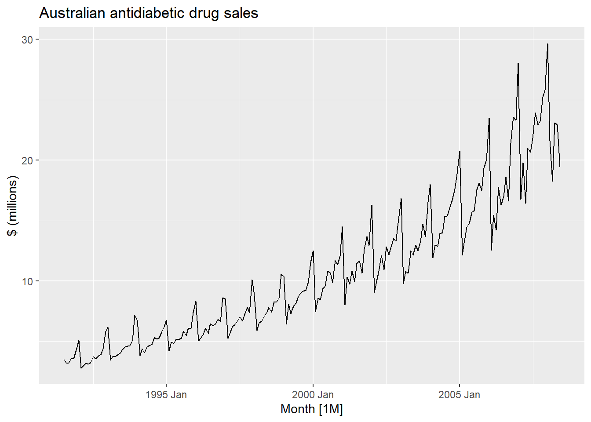
# Here we see an increasing trend, with a seasonal patters.# Forecasts would need to take these into consideration
Important Definitions
Trend - A long term increase of decrease in the data. This does not have to be linear, it can sometimes “change directions”.
Seasonal - A seasonal pattern occurs when a time series is affected by seasonal factors such as the time of year or the day of the week. Seasonality is always of a fixed and known period.
Cyclic - A cycle occurs when the data exhibits rises and falls that are not of a fixed frequency.
In general, the average length of cycles is longer than the length of a seasonal pattern and the magnitudes of cycles tend to be more variable than the magnitudes of seasonal patterns.
Seasonal Plots
a10
# A tsibble: 204 x 3 [1M]
Month TotalC Cost
<mth> <dbl> <dbl>
1 1991 Jul 3526591 3.53
2 1991 Aug 3180891 3.18
3 1991 Sep 3252221 3.25
4 1991 Oct 3611003 3.61
5 1991 Nov 3565869 3.57
6 1991 Dec 4306371 4.31
7 1992 Jan 5088335 5.09
8 1992 Feb 2814520 2.81
9 1992 Mar 2985811 2.99
10 1992 Apr 3204780 3.20
# ℹ 194 more rows
vic_elec |>gg_season(Demand, period ="day") +theme(legend.position ="none") +labs(y="MWh", title ="Electricity demand: Victoria")
vic_elec |>gg_season(Demand, period ="week") +theme(legend.position ="none") +labs(y="MWh", title="Electricity demand: Victoria")
vic_elec |>gg_season(Demand, period ="year") +labs(y="MWh", title="Electricity demand: Victoria")
Seasonal sub series plots
# Data from each season are collected together in separate mini time plots# Plots each season separatelya10 |>gg_subseries(Cost) +labs(y ="$ (millions)",title ="Australian antidiabetic drug sales" )
# Blue line is the average value for each month# Not too informative for this dataholidays <- tourism |>filter(Purpose =="Holiday") |>group_by(State) |>summarise(Trips =sum(Trips))holidays
# Seasonality in some states is very different than the seasonality in other statesholidays |>gg_subseries(Trips) +labs(y ="Overnight trips ('000)",title ="Australian domestic holidays")
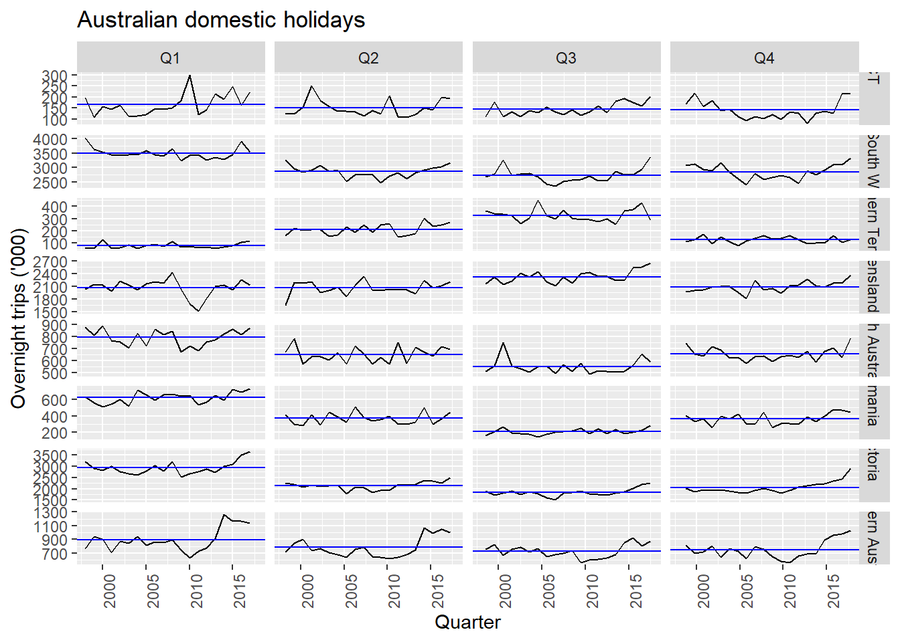
Scatterplots
Sometimes we are intereted in relationships between multiple time series
Rows: 100 Columns: 4
── Column specification ────────────────────────────────────────────────────────
Delimiter: ","
dbl (3): Sales, AdBudget, GDP
date (1): Quarter
ℹ Use `spec()` to retrieve the full column specification for this data.
ℹ Specify the column types or set `show_col_types = FALSE` to quiet this message.
year state y
1 1997 Alabama 324158
2 1998 Alabama 329134
3 1999 Alabama 337270
4 2000 Alabama 353614
5 2001 Alabama 332693
6 2002 Alabama 379343
7 2003 Alabama 350345
8 2004 Alabama 382367
9 2005 Alabama 353156
10 2006 Alabama 391093
11 2007 Alabama 418512
12 2008 Alabama 404157
13 2009 Alabama 454456
14 2010 Alabama 534779
15 2011 Alabama 598514
16 2012 Alabama 666712
17 2013 Alabama 615407
18 2014 Alabama 635323
19 2015 Alabama 681149
20 2016 Alabama 694881
21 2017 Alabama 661366
22 2018 Alabama 750188
23 2019 Alabama 729402
24 1997 Alaska 425393
25 1998 Alaska 434871
26 1999 Alaska 422816
27 2000 Alaska 427288
28 2001 Alaska 408960
29 2002 Alaska 419131
30 2003 Alaska 414234
31 2004 Alaska 406319
32 2005 Alaska 432972
33 2006 Alaska 373850
34 2007 Alaska 369967
35 2008 Alaska 341888
36 2009 Alaska 342261
37 2010 Alaska 333312
38 2011 Alaska 335458
39 2012 Alaska 343110
40 2013 Alaska 332298
41 2014 Alaska 328945
42 2015 Alaska 333602
43 2016 Alaska 330552
44 2017 Alaska 347725
45 2018 Alaska 355132
46 2019 Alaska 366476
47 1997 Arizona 134706
48 1998 Arizona 158355
49 1999 Arizona 165076
50 2000 Arizona 205235
51 2001 Arizona 240812
52 2002 Arizona 250734
53 2003 Arizona 272921
54 2004 Arizona 349622
55 2005 Arizona 321584
56 2006 Arizona 358069
57 2007 Arizona 392954
58 2008 Arizona 399188
59 2009 Arizona 369739
60 2010 Arizona 330914
61 2011 Arizona 288802
62 2012 Arizona 332068
63 2013 Arizona 332073
64 2014 Arizona 306715
65 2015 Arizona 351263
66 2016 Arizona 360576
67 2017 Arizona 321451
68 2018 Arizona 384753
69 2019 Arizona 468482
70 1997 Arkansas 260113
71 1998 Arkansas 266485
72 1999 Arkansas 252853
73 2000 Arkansas 251329
74 2001 Arkansas 227943
75 2002 Arkansas 242325
76 2003 Arkansas 246916
77 2004 Arkansas 215124
78 2005 Arkansas 213609
79 2006 Arkansas 233868
80 2007 Arkansas 226439
81 2008 Arkansas 234901
82 2009 Arkansas 244193
83 2010 Arkansas 271515
84 2011 Arkansas 284076
85 2012 Arkansas 296132
86 2013 Arkansas 282120
87 2014 Arkansas 268444
88 2015 Arkansas 291006
89 2016 Arkansas 309732
90 2017 Arkansas 311609
91 2018 Arkansas 360804
92 2019 Arkansas 360024
93 1997 California 2146211
94 1998 California 2309883
95 1999 California 2339521
96 2000 California 2508797
97 2001 California 2464565
98 2002 California 2273193
99 2003 California 2269405
100 2004 California 2406889
101 2005 California 2248256
102 2006 California 2315721
103 2007 California 2395674
104 2008 California 2405266
105 2009 California 2328504
106 2010 California 2273128
107 2011 California 2153186
108 2012 California 2403494
109 2013 California 2415571
110 2014 California 2339392
111 2015 California 2301217
112 2016 California 2172889
113 2017 California 2116902
114 2018 California 2137920
115 2019 California 2154030
116 1997 Colorado 314486
117 1998 Colorado 330259
118 1999 Colorado 333085
119 2000 Colorado 367920
120 2001 Colorado 463738
121 2002 Colorado 459397
122 2003 Colorado 436253
123 2004 Colorado 440378
124 2005 Colorado 470321
125 2006 Colorado 450832
126 2007 Colorado 504775
127 2008 Colorado 504783
128 2009 Colorado 523726
129 2010 Colorado 501350
130 2011 Colorado 466680
131 2012 Colorado 443750
132 2013 Colorado 467798
133 2014 Colorado 478987
134 2015 Colorado 466906
135 2016 Colorado 441018
136 2017 Colorado 438137
137 2018 Colorado 485735
138 2019 Colorado 520139
139 1997 Connecticut 144708
140 1998 Connecticut 131497
141 1999 Connecticut 152237
142 2000 Connecticut 159712
143 2001 Connecticut 146278
144 2002 Connecticut 177587
145 2003 Connecticut 154075
146 2004 Connecticut 162642
147 2005 Connecticut 168067
148 2006 Connecticut 172682
149 2007 Connecticut 180181
150 2008 Connecticut 166801
151 2009 Connecticut 185056
152 2010 Connecticut 199426
153 2011 Connecticut 230036
154 2012 Connecticut 229156
155 2013 Connecticut 234475
156 2014 Connecticut 235859
157 2015 Connecticut 254065
158 2016 Connecticut 247958
159 2017 Connecticut 239818
160 2018 Connecticut 277931
161 2019 Connecticut 283408
162 1997 Delaware 46511
163 1998 Delaware 40809
164 1999 Delaware 56013
165 2000 Delaware 48387
166 2001 Delaware 50113
167 2002 Delaware 52216
168 2003 Delaware 46177
169 2004 Delaware 48057
170 2005 Delaware 46904
171 2006 Delaware 43190
172 2007 Delaware 48155
173 2008 Delaware 48162
174 2009 Delaware 50148
175 2010 Delaware 54825
176 2011 Delaware 79715
177 2012 Delaware 101676
178 2013 Delaware 95978
179 2014 Delaware 101379
180 2015 Delaware 102693
181 2016 Delaware 108562
182 2017 Delaware 98966
183 2018 Delaware 95516
184 2019 Delaware 89214
185 1997 District of Columbia 34105
186 1998 District of Columbia 30409
187 1999 District of Columbia 32281
188 2000 District of Columbia 33468
189 2001 District of Columbia 29802
190 2002 District of Columbia 32898
191 2003 District of Columbia 32814
192 2004 District of Columbia 32227
193 2005 District of Columbia 32085
194 2006 District of Columbia 29049
195 2007 District of Columbia 32966
196 2008 District of Columbia 31880
197 2009 District of Columbia 33177
198 2010 District of Columbia 33251
199 2011 District of Columbia 32862
200 2012 District of Columbia 28561
201 2013 District of Columbia 32743
202 2014 District of Columbia 33848
203 2015 District of Columbia 32237
204 2016 District of Columbia 28888
205 2017 District of Columbia 29457
206 2018 District of Columbia 31490
207 2019 District of Columbia 30544
208 1999 Federal Offshore -- Gulf of Mexico 0
209 2000 Federal Offshore -- Gulf of Mexico 0
210 2001 Federal Offshore -- Gulf of Mexico 0
211 2002 Federal Offshore -- Gulf of Mexico 109277
212 2003 Federal Offshore -- Gulf of Mexico 98372
213 2004 Federal Offshore -- Gulf of Mexico 90025
214 2005 Federal Offshore -- Gulf of Mexico 78139
215 2006 Federal Offshore -- Gulf of Mexico 102242
216 2007 Federal Offshore -- Gulf of Mexico 115528
217 2008 Federal Offshore -- Gulf of Mexico 102389
218 2009 Federal Offshore -- Gulf of Mexico 103976
219 2010 Federal Offshore -- Gulf of Mexico 108490
220 2011 Federal Offshore -- Gulf of Mexico 101217
221 2012 Federal Offshore -- Gulf of Mexico 93985
222 2013 Federal Offshore -- Gulf of Mexico 95207
223 2014 Federal Offshore -- Gulf of Mexico 93814
224 2015 Federal Offshore -- Gulf of Mexico 95492
225 2016 Federal Offshore -- Gulf of Mexico 95832
226 2017 Federal Offshore -- Gulf of Mexico 94379
227 2018 Federal Offshore -- Gulf of Mexico 94178
228 2019 Federal Offshore -- Gulf of Mexico 94298
229 1997 Florida 522116
230 1998 Florida 503844
231 1999 Florida 559366
232 2000 Florida 541847
233 2001 Florida 543143
234 2002 Florida 689337
235 2003 Florida 689986
236 2004 Florida 734178
237 2005 Florida 778209
238 2006 Florida 891611
239 2007 Florida 917244
240 2008 Florida 942699
241 2009 Florida 1055340
242 2010 Florida 1158452
243 2011 Florida 1217689
244 2012 Florida 1328463
245 2013 Florida 1225676
246 2014 Florida 1214531
247 2015 Florida 1345790
248 2016 Florida 1382558
249 2017 Florida 1387960
250 2018 Florida 1477160
251 2019 Florida 1545434
252 1997 Georgia 371376
253 1998 Georgia 368579
254 1999 Georgia 337576
255 2000 Georgia 413845
256 2001 Georgia 351109
257 2002 Georgia 383546
258 2003 Georgia 379761
259 2004 Georgia 394986
260 2005 Georgia 412560
261 2006 Georgia 420469
262 2007 Georgia 441107
263 2008 Georgia 425043
264 2009 Georgia 462799
265 2010 Georgia 530030
266 2011 Georgia 522897
267 2012 Georgia 615771
268 2013 Georgia 625283
269 2014 Georgia 652408
270 2015 Georgia 694399
271 2016 Georgia 706688
272 2017 Georgia 689501
273 2018 Georgia 738986
274 2019 Georgia 753735
275 1997 Hawaii 2894
276 1998 Hawaii 2654
277 1999 Hawaii 3115
278 2000 Hawaii 2841
279 2001 Hawaii 2818
280 2002 Hawaii 2734
281 2003 Hawaii 2732
282 2004 Hawaii 2774
283 2005 Hawaii 2795
284 2006 Hawaii 2783
285 2007 Hawaii 2850
286 2008 Hawaii 2702
287 2009 Hawaii 2607
288 2010 Hawaii 2627
289 2011 Hawaii 2619
290 2012 Hawaii 2689
291 2013 Hawaii 2855
292 2014 Hawaii 2916
293 2015 Hawaii 2924
294 2016 Hawaii 3040
295 2017 Hawaii 3106
296 2018 Hawaii 3282
297 2019 Hawaii 3277
298 1997 Idaho 68669
299 1998 Idaho 69277
300 1999 Idaho 70672
301 2000 Idaho 72697
302 2001 Idaho 80279
303 2002 Idaho 71481
304 2003 Idaho 69868
305 2004 Idaho 75335
306 2005 Idaho 74540
307 2006 Idaho 75709
308 2007 Idaho 81937
309 2008 Idaho 88515
310 2009 Idaho 85197
311 2010 Idaho 83326
312 2011 Idaho 82544
313 2012 Idaho 89004
314 2013 Idaho 104783
315 2014 Idaho 92046
316 2015 Idaho 104730
317 2016 Idaho 106306
318 2017 Idaho 111334
319 2018 Idaho 111700
320 2019 Idaho 127638
321 1997 Illinois 1077139
322 1998 Illinois 957254
323 1999 Illinois 1004281
324 2000 Illinois 1030604
325 2001 Illinois 951616
326 2002 Illinois 1049878
327 2003 Illinois 998486
328 2004 Illinois 953207
329 2005 Illinois 969642
330 2006 Illinois 893997
331 2007 Illinois 965591
332 2008 Illinois 1000501
333 2009 Illinois 956068
334 2010 Illinois 966678
335 2011 Illinois 986867
336 2012 Illinois 940367
337 2013 Illinois 1056826
338 2014 Illinois 1093931
339 2015 Illinois 993548
340 2016 Illinois 1024186
341 2017 Illinois 1017772
342 2018 Illinois 1108592
343 2019 Illinois 1134722
344 1997 Indiana 556624
345 1998 Indiana 521748
346 1999 Indiana 556932
347 2000 Indiana 570558
348 2001 Indiana 501711
349 2002 Indiana 539034
350 2003 Indiana 527037
351 2004 Indiana 526701
352 2005 Indiana 531111
353 2006 Indiana 496303
354 2007 Indiana 535796
355 2008 Indiana 551424
356 2009 Indiana 506944
357 2010 Indiana 573866
358 2011 Indiana 630669
359 2012 Indiana 649921
360 2013 Indiana 672751
361 2014 Indiana 713416
362 2015 Indiana 718725
363 2016 Indiana 754276
364 2017 Indiana 720453
365 2018 Indiana 854024
366 2019 Indiana 894471
367 1997 Iowa 254489
368 1998 Iowa 232057
369 1999 Iowa 230691
370 2000 Iowa 232565
371 2001 Iowa 224336
372 2002 Iowa 226457
373 2003 Iowa 230161
374 2004 Iowa 226819
375 2005 Iowa 241340
376 2006 Iowa 238454
377 2007 Iowa 293274
378 2008 Iowa 325772
379 2009 Iowa 315186
380 2010 Iowa 311075
381 2011 Iowa 306909
382 2012 Iowa 295183
383 2013 Iowa 326140
384 2014 Iowa 329385
385 2015 Iowa 317821
386 2016 Iowa 330094
387 2017 Iowa 391129
388 2018 Iowa 443174
389 2019 Iowa 442873
390 1997 Kansas 338231
391 1998 Kansas 326674
392 1999 Kansas 302932
393 2000 Kansas 312369
394 2001 Kansas 272500
395 2002 Kansas 304992
396 2003 Kansas 281346
397 2004 Kansas 256779
398 2005 Kansas 255123
399 2006 Kansas 264253
400 2007 Kansas 286538
401 2008 Kansas 282904
402 2009 Kansas 286973
403 2010 Kansas 275184
404 2011 Kansas 279724
405 2012 Kansas 262316
406 2013 Kansas 283177
407 2014 Kansas 284651
408 2015 Kansas 270938
409 2016 Kansas 267315
410 2017 Kansas 269919
411 2018 Kansas 310028
412 2019 Kansas 306050
413 1997 Kentucky 227931
414 1998 Kentucky 205129
415 1999 Kentucky 218399
416 2000 Kentucky 225168
417 2001 Kentucky 208974
418 2002 Kentucky 227920
419 2003 Kentucky 223226
420 2004 Kentucky 225470
421 2005 Kentucky 234080
422 2006 Kentucky 211049
423 2007 Kentucky 229799
424 2008 Kentucky 225295
425 2009 Kentucky 206833
426 2010 Kentucky 232099
427 2011 Kentucky 223034
428 2012 Kentucky 225924
429 2013 Kentucky 229983
430 2014 Kentucky 255434
431 2015 Kentucky 270958
432 2016 Kentucky 271845
433 2017 Kentucky 283678
434 2018 Kentucky 340125
435 2019 Kentucky 336191
436 1997 Louisiana 1661061
437 1998 Louisiana 1569190
438 1999 Louisiana 1495478
439 2000 Louisiana 1536725
440 2001 Louisiana 1219013
441 2002 Louisiana 1341444
442 2003 Louisiana 1233505
443 2004 Louisiana 1281428
444 2005 Louisiana 1254370
445 2006 Louisiana 1217871
446 2007 Louisiana 1289421
447 2008 Louisiana 1238661
448 2009 Louisiana 1189744
449 2010 Louisiana 1354641
450 2011 Louisiana 1420264
451 2012 Louisiana 1482343
452 2013 Louisiana 1396261
453 2014 Louisiana 1423424
454 2015 Louisiana 1470354
455 2016 Louisiana 1591882
456 2017 Louisiana 1593181
457 2018 Louisiana 1738734
458 2019 Louisiana 1861894
459 1997 Maine 6290
460 1998 Maine 5716
461 1999 Maine 6572
462 2000 Maine 44779
463 2001 Maine 95733
464 2002 Maine 101536
465 2003 Maine 70832
466 2004 Maine 72565
467 2005 Maine 57835
468 2006 Maine 49605
469 2007 Maine 63183
470 2008 Maine 70146
471 2009 Maine 70334
472 2010 Maine 77575
473 2011 Maine 71690
474 2012 Maine 68266
475 2013 Maine 64091
476 2014 Maine 60663
477 2015 Maine 52777
478 2016 Maine 53128
479 2017 Maine 43810
480 2018 Maine 46464
481 2019 Maine 44484
482 1997 Maryland 212017
483 1998 Maryland 188552
484 1999 Maryland 196350
485 2000 Maryland 212133
486 2001 Maryland 178376
487 2002 Maryland 196276
488 2003 Maryland 197024
489 2004 Maryland 194725
490 2005 Maryland 202509
491 2006 Maryland 182294
492 2007 Maryland 201053
493 2008 Maryland 196067
494 2009 Maryland 196510
495 2010 Maryland 212020
496 2011 Maryland 193986
497 2012 Maryland 208946
498 2013 Maryland 197356
499 2014 Maryland 207103
500 2015 Maryland 215005
501 2016 Maryland 219024
502 2017 Maryland 222881
503 2018 Maryland 300637
504 2019 Maryland 300876
505 1997 Massachusetts 402629
506 1998 Massachusetts 358846
507 1999 Massachusetts 344790
508 2000 Massachusetts 343314
509 2001 Massachusetts 349103
510 2002 Massachusetts 393194
511 2003 Massachusetts 403991
512 2004 Massachusetts 372532
513 2005 Massachusetts 378068
514 2006 Massachusetts 370664
515 2007 Massachusetts 408704
516 2008 Massachusetts 406719
517 2009 Massachusetts 395852
518 2010 Massachusetts 432297
519 2011 Massachusetts 449194
520 2012 Massachusetts 416350
521 2013 Massachusetts 421001
522 2014 Massachusetts 421671
523 2015 Massachusetts 444332
524 2016 Massachusetts 427946
525 2017 Massachusetts 448996
526 2018 Massachusetts 438577
527 2019 Massachusetts 433774
528 1997 Michigan 994342
529 1998 Michigan 876444
530 1999 Michigan 951143
531 2000 Michigan 963136
532 2001 Michigan 906001
533 2002 Michigan 966354
534 2003 Michigan 924819
535 2004 Michigan 916629
536 2005 Michigan 913827
537 2006 Michigan 803336
538 2007 Michigan 798126
539 2008 Michigan 779602
540 2009 Michigan 735340
541 2010 Michigan 746748
542 2011 Michigan 776466
543 2012 Michigan 790642
544 2013 Michigan 814635
545 2014 Michigan 861755
546 2015 Michigan 844801
547 2016 Michigan 890324
548 2017 Michigan 870756
549 2018 Michigan 965538
550 2019 Michigan 1002237
551 1997 Minnesota 354092
552 1998 Minnesota 330513
553 1999 Minnesota 344591
554 2000 Minnesota 362025
555 2001 Minnesota 340911
556 2002 Minnesota 371583
557 2003 Minnesota 371261
558 2004 Minnesota 359898
559 2005 Minnesota 367825
560 2006 Minnesota 352570
561 2007 Minnesota 388335
562 2008 Minnesota 425352
563 2009 Minnesota 394136
564 2010 Minnesota 422968
565 2011 Minnesota 420770
566 2012 Minnesota 422263
567 2013 Minnesota 467874
568 2014 Minnesota 474520
569 2015 Minnesota 431315
570 2016 Minnesota 449783
571 2017 Minnesota 451979
572 2018 Minnesota 490169
573 2019 Minnesota 509061
574 1997 Mississippi 255475
575 1998 Mississippi 241342
576 1999 Mississippi 306733
577 2000 Mississippi 300652
578 2001 Mississippi 332589
579 2002 Mississippi 343890
580 2003 Mississippi 265842
581 2004 Mississippi 282051
582 2005 Mississippi 301663
583 2006 Mississippi 307305
584 2007 Mississippi 364067
585 2008 Mississippi 355006
586 2009 Mississippi 364323
587 2010 Mississippi 438733
588 2011 Mississippi 433538
589 2012 Mississippi 494016
590 2013 Mississippi 420594
591 2014 Mississippi 427584
592 2015 Mississippi 521355
593 2016 Mississippi 544464
594 2017 Mississippi 526862
595 2018 Mississippi 576888
596 2019 Mississippi 570154
597 1997 Missouri 283294
598 1998 Missouri 258652
599 1999 Missouri 265798
600 2000 Missouri 284763
601 2001 Missouri 283793
602 2002 Missouri 275629
603 2003 Missouri 262529
604 2004 Missouri 263945
605 2005 Missouri 268040
606 2006 Missouri 252697
607 2007 Missouri 272536
608 2008 Missouri 296058
609 2009 Missouri 264867
610 2010 Missouri 280181
611 2011 Missouri 272583
612 2012 Missouri 255875
613 2013 Missouri 276967
614 2014 Missouri 297087
615 2015 Missouri 267673
616 2016 Missouri 267170
617 2017 Missouri 261993
618 2018 Missouri 322805
619 2019 Missouri 316378
620 1997 Montana 59851
621 1998 Montana 59840
622 1999 Montana 62129
623 2000 Montana 67955
624 2001 Montana 65051
625 2002 Montana 69532
626 2003 Montana 68473
627 2004 Montana 66829
628 2005 Montana 68355
629 2006 Montana 73879
630 2007 Montana 73822
631 2008 Montana 76422
632 2009 Montana 75802
633 2010 Montana 72025
634 2011 Montana 78217
635 2012 Montana 73399
636 2013 Montana 79670
637 2014 Montana 78110
638 2015 Montana 75042
639 2016 Montana 75037
640 2017 Montana 80036
641 2018 Montana 87034
642 2019 Montana 88394
643 1997 Nebraska 132221
644 1998 Nebraska 130730
645 1999 Nebraska 121487
646 2000 Nebraska 126962
647 2001 Nebraska 121984
648 2002 Nebraska 120333
649 2003 Nebraska 118922
650 2004 Nebraska 115011
651 2005 Nebraska 119070
652 2006 Nebraska 129885
653 2007 Nebraska 150808
654 2008 Nebraska 171005
655 2009 Nebraska 163474
656 2010 Nebraska 168944
657 2011 Nebraska 171777
658 2012 Nebraska 158757
659 2013 Nebraska 173376
660 2014 Nebraska 172837
661 2015 Nebraska 161189
662 2016 Nebraska 163362
663 2017 Nebraska 166286
664 2018 Nebraska 185949
665 2019 Nebraska 185260
666 1997 Nevada 132128
667 1998 Nevada 148539
668 1999 Nevada 154689
669 2000 Nevada 189170
670 2001 Nevada 176835
671 2002 Nevada 176596
672 2003 Nevada 185846
673 2004 Nevada 214984
674 2005 Nevada 227149
675 2006 Nevada 249608
676 2007 Nevada 254406
677 2008 Nevada 264596
678 2009 Nevada 275468
679 2010 Nevada 259251
680 2011 Nevada 249971
681 2012 Nevada 273502
682 2013 Nevada 272965
683 2014 Nevada 253290
684 2015 Nevada 300002
685 2016 Nevada 304181
686 2017 Nevada 293849
687 2018 Nevada 299783
688 2019 Nevada 302373
689 1997 New Hampshire 20848
690 1998 New Hampshire 19127
691 1999 New Hampshire 20313
692 2000 New Hampshire 24950
693 2001 New Hampshire 23398
694 2002 New Hampshire 24901
695 2003 New Hampshire 54147
696 2004 New Hampshire 61172
697 2005 New Hampshire 70484
698 2006 New Hampshire 62549
699 2007 New Hampshire 62132
700 2008 New Hampshire 71179
701 2009 New Hampshire 59950
702 2010 New Hampshire 60378
703 2011 New Hampshire 69978
704 2012 New Hampshire 72032
705 2013 New Hampshire 54028
706 2014 New Hampshire 57018
707 2015 New Hampshire 68682
708 2016 New Hampshire 57957
709 2017 New Hampshire 52071
710 2018 New Hampshire 49888
711 2019 New Hampshire 53624
712 1997 New Jersey 717011
713 1998 New Jersey 679619
714 1999 New Jersey 715630
715 2000 New Jersey 605275
716 2001 New Jersey 564923
717 2002 New Jersey 598602
718 2003 New Jersey 612890
719 2004 New Jersey 620806
720 2005 New Jersey 602388
721 2006 New Jersey 547206
722 2007 New Jersey 618965
723 2008 New Jersey 614908
724 2009 New Jersey 620790
725 2010 New Jersey 654458
726 2011 New Jersey 660743
727 2012 New Jersey 652060
728 2013 New Jersey 682247
729 2014 New Jersey 773221
730 2015 New Jersey 745789
731 2016 New Jersey 762958
732 2017 New Jersey 706589
733 2018 New Jersey 770284
734 2019 New Jersey 766824
735 1997 New Mexico 256464
736 1998 New Mexico 245823
737 1999 New Mexico 236264
738 2000 New Mexico 266469
739 2001 New Mexico 266283
740 2002 New Mexico 235098
741 2003 New Mexico 221021
742 2004 New Mexico 223575
743 2005 New Mexico 220717
744 2006 New Mexico 223636
745 2007 New Mexico 234236
746 2008 New Mexico 246665
747 2009 New Mexico 241194
748 2010 New Mexico 241137
749 2011 New Mexico 246418
750 2012 New Mexico 243961
751 2013 New Mexico 245502
752 2014 New Mexico 247637
753 2015 New Mexico 250518
754 2016 New Mexico 247761
755 2017 New Mexico 239305
756 2018 New Mexico 271547
757 2019 New Mexico 296753
758 1997 New York 1324164
759 1998 New York 1232473
760 1999 New York 1274162
761 2000 New York 1244746
762 2001 New York 1171898
763 2002 New York 1199632
764 2003 New York 1101618
765 2004 New York 1098056
766 2005 New York 1080215
767 2006 New York 1097160
768 2007 New York 1187059
769 2008 New York 1180356
770 2009 New York 1142625
771 2010 New York 1198127
772 2011 New York 1217324
773 2012 New York 1223036
774 2013 New York 1273263
775 2014 New York 1349203
776 2015 New York 1353385
777 2016 New York 1296270
778 2017 New York 1237311
779 2018 New York 1350443
780 2019 New York 1312031
781 1997 North Carolina 215634
782 1998 North Carolina 214092
783 1999 North Carolina 217159
784 2000 North Carolina 233714
785 2001 North Carolina 207108
786 2002 North Carolina 235376
787 2003 North Carolina 218642
788 2004 North Carolina 224796
789 2005 North Carolina 229715
790 2006 North Carolina 223032
791 2007 North Carolina 237354
792 2008 North Carolina 243090
793 2009 North Carolina 247047
794 2010 North Carolina 304148
795 2011 North Carolina 307804
796 2012 North Carolina 363945
797 2013 North Carolina 440175
798 2014 North Carolina 452780
799 2015 North Carolina 498576
800 2016 North Carolina 522002
801 2017 North Carolina 502567
802 2018 North Carolina 582418
803 2019 North Carolina 556490
804 1997 North Dakota 56179
805 1998 North Dakota 49541
806 1999 North Dakota 56418
807 2000 North Dakota 56528
808 2001 North Dakota 60819
809 2002 North Dakota 66726
810 2003 North Dakota 60907
811 2004 North Dakota 59986
812 2005 North Dakota 53050
813 2006 North Dakota 53336
814 2007 North Dakota 59453
815 2008 North Dakota 63097
816 2009 North Dakota 54564
817 2010 North Dakota 66395
818 2011 North Dakota 72463
819 2012 North Dakota 72740
820 2013 North Dakota 81593
821 2014 North Dakota 86881
822 2015 North Dakota 97725
823 2016 North Dakota 102322
824 2017 North Dakota 109440
825 2018 North Dakota 126325
826 2019 North Dakota 134722
827 1997 Ohio 897693
828 1998 Ohio 811384
829 1999 Ohio 841966
830 2000 Ohio 890962
831 2001 Ohio 804243
832 2002 Ohio 830955
833 2003 Ohio 848388
834 2004 Ohio 825753
835 2005 Ohio 825961
836 2006 Ohio 742359
837 2007 Ohio 806350
838 2008 Ohio 792247
839 2009 Ohio 740925
840 2010 Ohio 784293
841 2011 Ohio 823548
842 2012 Ohio 842959
843 2013 Ohio 912403
844 2014 Ohio 1002345
845 2015 Ohio 966492
846 2016 Ohio 928492
847 2017 Ohio 948324
848 2018 Ohio 1162745
849 2019 Ohio 1179077
850 1997 Oklahoma 567050
851 1998 Oklahoma 575855
852 1999 Oklahoma 538329
853 2000 Oklahoma 538563
854 2001 Oklahoma 491458
855 2002 Oklahoma 508298
856 2003 Oklahoma 540103
857 2004 Oklahoma 538576
858 2005 Oklahoma 582536
859 2006 Oklahoma 624400
860 2007 Oklahoma 658379
861 2008 Oklahoma 687989
862 2009 Oklahoma 659305
863 2010 Oklahoma 675727
864 2011 Oklahoma 655919
865 2012 Oklahoma 691661
866 2013 Oklahoma 658569
867 2014 Oklahoma 642309
868 2015 Oklahoma 679457
869 2016 Oklahoma 701776
870 2017 Oklahoma 664233
871 2018 Oklahoma 807023
872 2019 Oklahoma 835139
873 1997 Oregon 185069
874 1998 Oregon 229403
875 1999 Oregon 235009
876 2000 Oregon 224888
877 2001 Oregon 229665
878 2002 Oregon 202164
879 2003 Oregon 212556
880 2004 Oregon 234997
881 2005 Oregon 232562
882 2006 Oregon 222608
883 2007 Oregon 251927
884 2008 Oregon 268484
885 2009 Oregon 248864
886 2010 Oregon 239325
887 2011 Oregon 199419
888 2012 Oregon 215830
889 2013 Oregon 240418
890 2014 Oregon 220090
891 2015 Oregon 234634
892 2016 Oregon 235912
893 2017 Oregon 247206
894 2018 Oregon 255713
895 2019 Oregon 288976
896 1997 Pennsylvania 706230
897 1998 Pennsylvania 644017
898 1999 Pennsylvania 688740
899 2000 Pennsylvania 702847
900 2001 Pennsylvania 634794
901 2002 Pennsylvania 675583
902 2003 Pennsylvania 689992
903 2004 Pennsylvania 696175
904 2005 Pennsylvania 691591
905 2006 Pennsylvania 659754
906 2007 Pennsylvania 752401
907 2008 Pennsylvania 749884
908 2009 Pennsylvania 809707
909 2010 Pennsylvania 879365
910 2011 Pennsylvania 965742
911 2012 Pennsylvania 1037979
912 2013 Pennsylvania 1121696
913 2014 Pennsylvania 1244371
914 2015 Pennsylvania 1255621
915 2016 Pennsylvania 1301000
916 2017 Pennsylvania 1350245
917 2018 Pennsylvania 1460456
918 2019 Pennsylvania 1612589
919 1997 Rhode Island 117707
920 1998 Rhode Island 130751
921 1999 Rhode Island 118001
922 2000 Rhode Island 88419
923 2001 Rhode Island 95607
924 2002 Rhode Island 87805
925 2003 Rhode Island 78456
926 2004 Rhode Island 72609
927 2005 Rhode Island 80764
928 2006 Rhode Island 77204
929 2007 Rhode Island 87972
930 2008 Rhode Island 89256
931 2009 Rhode Island 92743
932 2010 Rhode Island 94110
933 2011 Rhode Island 100455
934 2012 Rhode Island 95476
935 2013 Rhode Island 85537
936 2014 Rhode Island 88886
937 2015 Rhode Island 93886
938 2016 Rhode Island 85977
939 2017 Rhode Island 92061
940 2018 Rhode Island 101796
941 2019 Rhode Island 99301
942 1997 South Carolina 153917
943 1998 South Carolina 159458
944 1999 South Carolina 162926
945 2000 South Carolina 160436
946 2001 South Carolina 141785
947 2002 South Carolina 184803
948 2003 South Carolina 146641
949 2004 South Carolina 163787
950 2005 South Carolina 172032
951 2006 South Carolina 174806
952 2007 South Carolina 175701
953 2008 South Carolina 170077
954 2009 South Carolina 190928
955 2010 South Carolina 220235
956 2011 South Carolina 229497
957 2012 South Carolina 244850
958 2013 South Carolina 232297
959 2014 South Carolina 230525
960 2015 South Carolina 275751
961 2016 South Carolina 275946
962 2017 South Carolina 278768
963 2018 South Carolina 330362
964 2019 South Carolina 337310
965 1997 South Dakota 36115
966 1998 South Dakota 33042
967 1999 South Dakota 35794
968 2000 South Dakota 37939
969 2001 South Dakota 37077
970 2002 South Dakota 41577
971 2003 South Dakota 43881
972 2004 South Dakota 41679
973 2005 South Dakota 42555
974 2006 South Dakota 40739
975 2007 South Dakota 53938
976 2008 South Dakota 65258
977 2009 South Dakota 66185
978 2010 South Dakota 72563
979 2011 South Dakota 73605
980 2012 South Dakota 70238
981 2013 South Dakota 81986
982 2014 South Dakota 80613
983 2015 South Dakota 79099
984 2016 South Dakota 80513
985 2017 South Dakota 80890
986 2018 South Dakota 89464
987 2019 South Dakota 91362
988 1997 Tennessee 282395
989 1998 Tennessee 279070
990 1999 Tennessee 278841
991 2000 Tennessee 270658
992 2001 Tennessee 255990
993 2002 Tennessee 255515
994 2003 Tennessee 257315
995 2004 Tennessee 231133
996 2005 Tennessee 230338
997 2006 Tennessee 221626
998 2007 Tennessee 221118
999 2008 Tennessee 229935
1000 2009 Tennessee 216945
1001 2010 Tennessee 257443
1002 2011 Tennessee 264231
1003 2012 Tennessee 277127
1004 2013 Tennessee 279441
1005 2014 Tennessee 305633
1006 2015 Tennessee 313379
1007 2016 Tennessee 326546
1008 2017 Tennessee 321644
1009 2018 Tennessee 392161
1010 2019 Tennessee 402277
1011 1997 Texas 4116722
1012 1998 Texas 4205459
1013 1999 Texas 4009689
1014 2000 Texas 4421777
1015 2001 Texas 4252152
1016 2002 Texas 4303831
1017 2003 Texas 4050632
1018 2004 Texas 3908243
1019 2005 Texas 3503636
1020 2006 Texas 3432236
1021 2007 Texas 3516706
1022 2008 Texas 3546804
1023 2009 Texas 3387341
1024 2010 Texas 3574398
1025 2011 Texas 3693905
1026 2012 Texas 3850331
1027 2013 Texas 4021851
1028 2014 Texas 3928277
1029 2015 Texas 4113608
1030 2016 Texas 4020915
1031 2017 Texas 3867275
1032 2018 Texas 4464219
1033 2019 Texas 4619800
1034 1949 U.S. 4971152
1035 1950 U.S. 5766542
1036 1951 U.S. 6810162
1037 1952 U.S. 7294320
1038 1953 U.S. 7639270
1039 1954 U.S. 8048504
1040 1955 U.S. 8693657
1041 1956 U.S. 9288865
1042 1957 U.S. 9846139
1043 1958 U.S. 10302608
1044 1959 U.S. 11321181
1045 1960 U.S. 11966537
1046 1961 U.S. 12489268
1047 1962 U.S. 13266513
1048 1963 U.S. 13970229
1049 1964 U.S. 14813808
1050 1965 U.S. 15279716
1051 1966 U.S. 16452403
1052 1967 U.S. 17388360
1053 1968 U.S. 18632062
1054 1969 U.S. 20056240
1055 1970 U.S. 21139386
1056 1971 U.S. 21793454
1057 1972 U.S. 22101451
1058 1973 U.S. 22049363
1059 1974 U.S. 21223133
1060 1975 U.S. 19537593
1061 1976 U.S. 19946496
1062 1977 U.S. 19520581
1063 1978 U.S. 19627478
1064 1979 U.S. 20240761
1065 1980 U.S. 19877293
1066 1981 U.S. 19403858
1067 1982 U.S. 18001055
1068 1983 U.S. 16834912
1069 1984 U.S. 17950527
1070 1985 U.S. 17280943
1071 1986 U.S. 16221296
1072 1987 U.S. 17210809
1073 1988 U.S. 18029585
1074 1989 U.S. 19118997
1075 1990 U.S. 19173556
1076 1991 U.S. 19562067
1077 1992 U.S. 20228228
1078 1993 U.S. 20789842
1079 1994 U.S. 21247098
1080 1995 U.S. 22206889
1081 1996 U.S. 22609080
1082 1997 U.S. 22737342
1083 1998 U.S. 22245956
1084 1999 U.S. 22405151
1085 2000 U.S. 23333121
1086 2001 U.S. 22238624
1087 2002 U.S. 23027021
1088 2003 U.S. 22276502
1089 2004 U.S. 22402546
1090 2005 U.S. 22014434
1091 2006 U.S. 21699071
1092 2007 U.S. 23103793
1093 2008 U.S. 23277008
1094 2009 U.S. 22910078
1095 2010 U.S. 24086797
1096 2011 U.S. 24477425
1097 2012 U.S. 25538487
1098 2013 U.S. 26155071
1099 2014 U.S. 26593375
1100 2015 U.S. 27243858
1101 2016 U.S. 27444220
1102 2017 U.S. 27139699
1103 2018 U.S. 30138930
1104 2019 U.S. 31099061
1105 2020 U.S. 30482049
1106 1997 Utah 165253
1107 1998 Utah 169776
1108 1999 Utah 159889
1109 2000 Utah 164557
1110 2001 Utah 159299
1111 2002 Utah 163379
1112 2003 Utah 154125
1113 2004 Utah 155891
1114 2005 Utah 160275
1115 2006 Utah 187399
1116 2007 Utah 219700
1117 2008 Utah 224188
1118 2009 Utah 214220
1119 2010 Utah 219213
1120 2011 Utah 222227
1121 2012 Utah 223039
1122 2013 Utah 247285
1123 2014 Utah 241737
1124 2015 Utah 232612
1125 2016 Utah 240114
1126 2017 Utah 221834
1127 2018 Utah 244058
1128 2019 Utah 264046
1129 1997 Vermont 8061
1130 1998 Vermont 7735
1131 1999 Vermont 8033
1132 2000 Vermont 10426
1133 2001 Vermont 7919
1134 2002 Vermont 8367
1135 2003 Vermont 8400
1136 2004 Vermont 8685
1137 2005 Vermont 8372
1138 2006 Vermont 8056
1139 2007 Vermont 8867
1140 2008 Vermont 8624
1141 2009 Vermont 8638
1142 2010 Vermont 8443
1143 2011 Vermont 8611
1144 2012 Vermont 8191
1145 2013 Vermont 9602
1146 2014 Vermont 10677
1147 2015 Vermont 11950
1148 2016 Vermont 12094
1149 2017 Vermont 11926
1150 2018 Vermont 13742
1151 2019 Vermont 13866
1152 1997 Virginia 248960
1153 1998 Virginia 260332
1154 1999 Virginia 276793
1155 2000 Virginia 268770
1156 2001 Virginia 237853
1157 2002 Virginia 258202
1158 2003 Virginia 262970
1159 2004 Virginia 277434
1160 2005 Virginia 299746
1161 2006 Virginia 274175
1162 2007 Virginia 319913
1163 2008 Virginia 299364
1164 2009 Virginia 319134
1165 2010 Virginia 375421
1166 2011 Virginia 373444
1167 2012 Virginia 410106
1168 2013 Virginia 418506
1169 2014 Virginia 419705
1170 2015 Virginia 500477
1171 2016 Virginia 543343
1172 2017 Virginia 566676
1173 2018 Virginia 634162
1174 2019 Virginia 684597
1175 1997 Washington 256366
1176 1998 Washington 290229
1177 1999 Washington 287302
1178 2000 Washington 286653
1179 2001 Washington 312114
1180 2002 Washington 233716
1181 2003 Washington 249599
1182 2004 Washington 262485
1183 2005 Washington 264754
1184 2006 Washington 263395
1185 2007 Washington 272613
1186 2008 Washington 298140
1187 2009 Washington 310428
1188 2010 Washington 285726
1189 2011 Washington 264589
1190 2012 Washington 264540
1191 2013 Washington 318292
1192 2014 Washington 306675
1193 2015 Washington 307735
1194 2016 Washington 301418
1195 2017 Washington 324882
1196 2018 Washington 307985
1197 2019 Washington 345210
1198 1997 West Virginia 159504
1199 1998 West Virginia 142860
1200 1999 West Virginia 139961
1201 2000 West Virginia 147854
1202 2001 West Virginia 141090
1203 2002 West Virginia 146455
1204 2003 West Virginia 126986
1205 2004 West Virginia 122267
1206 2005 West Virginia 117136
1207 2006 West Virginia 113084
1208 2007 West Virginia 115974
1209 2008 West Virginia 111480
1210 2009 West Virginia 109652
1211 2010 West Virginia 113179
1212 2011 West Virginia 115361
1213 2012 West Virginia 129753
1214 2013 West Virginia 142082
1215 2014 West Virginia 165341
1216 2015 West Virginia 174165
1217 2016 West Virginia 171825
1218 2017 West Virginia 184025
1219 2018 West Virginia 202934
1220 2019 West Virginia 218282
1221 1997 Wisconsin 400651
1222 1998 Wisconsin 368022
1223 1999 Wisconsin 380560
1224 2000 Wisconsin 393601
1225 2001 Wisconsin 359784
1226 2002 Wisconsin 385310
1227 2003 Wisconsin 394711
1228 2004 Wisconsin 383316
1229 2005 Wisconsin 410250
1230 2006 Wisconsin 372462
1231 2007 Wisconsin 398370
1232 2008 Wisconsin 409377
1233 2009 Wisconsin 387066
1234 2010 Wisconsin 372898
1235 2011 Wisconsin 393734
1236 2012 Wisconsin 402656
1237 2013 Wisconsin 442544
1238 2014 Wisconsin 463186
1239 2015 Wisconsin 457743
1240 2016 Wisconsin 482233
1241 2017 Wisconsin 487732
1242 2018 Wisconsin 543025
1243 2019 Wisconsin 576650
1244 1997 Wyoming 100950
1245 1998 Wyoming 109188
1246 1999 Wyoming 96726
1247 2000 Wyoming 101314
1248 2001 Wyoming 98569
1249 2002 Wyoming 112872
1250 2003 Wyoming 115358
1251 2004 Wyoming 107060
1252 2005 Wyoming 108314
1253 2006 Wyoming 108481
1254 2007 Wyoming 140912
1255 2008 Wyoming 142705
1256 2009 Wyoming 142793
1257 2010 Wyoming 150106
1258 2011 Wyoming 156455
1259 2012 Wyoming 153333
1260 2013 Wyoming 149820
1261 2014 Wyoming 136796
1262 2015 Wyoming 119265
1263 2016 Wyoming 123351
1264 2017 Wyoming 149405
1265 2018 Wyoming 165384
1266 2019 Wyoming 154836
us_total <- us_total |>as_tsibble(index = year, key = state) us_total |>filter(state %in%c("Maine", "Vermont", "New Hampshire", "Massachusetts", "Connecticut", "Rhode Island")) |>ggplot(aes(x = year, y = y, colour = state)) +geom_line()
tourism
# A tsibble: 24,320 x 5 [1Q]
# Key: Region, State, Purpose [304]
Quarter Region State Purpose Trips
<qtr> <chr> <chr> <chr> <dbl>
1 1998 Q1 Adelaide South Australia Business 135.
2 1998 Q2 Adelaide South Australia Business 110.
3 1998 Q3 Adelaide South Australia Business 166.
4 1998 Q4 Adelaide South Australia Business 127.
5 1999 Q1 Adelaide South Australia Business 137.
6 1999 Q2 Adelaide South Australia Business 200.
7 1999 Q3 Adelaide South Australia Business 169.
8 1999 Q4 Adelaide South Australia Business 134.
9 2000 Q1 Adelaide South Australia Business 154.
10 2000 Q2 Adelaide South Australia Business 169.
# ℹ 24,310 more rows
tourism2 <- readxl::read_excel(("Data/tourism.xlsx"))# Create a tsibble which is identical to the tourism tsibble from the tsibble package.tourism2 <- tourism2 |>mutate(Quarter =yearquarter(Quarter)) |>as_tsibble(index = Quarter, key =c(Region, State, Purpose))# Find what combination of Region and Purpose had the maximum number of overnight trips on average.tourism2 |>group_by(Region, Purpose) |>mutate(max_trips =max(Trips)) |>filter(Trips == max_trips) |>arrange(desc(max_trips))
# A tsibble: 304 x 6 [1Q]
# Key: Region, State, Purpose [304]
# Groups: Region, Purpose [304]
Quarter Region State Purpose Trips max_trips
<qtr> <chr> <chr> <chr> <dbl> <dbl>
1 2017 Q4 Melbourne Victoria Visiting 985. 985.
2 2001 Q4 Sydney New South Wales Business 948. 948.
3 2016 Q4 Sydney New South Wales Visiting 921. 921.
4 1998 Q1 South Coast New South Wales Holiday 915. 915.
5 2016 Q1 North Coast NSW New South Wales Holiday 906. 906.
6 1998 Q1 Sydney New South Wales Holiday 828. 828.
7 2017 Q4 Melbourne Victoria Holiday 806. 806.
8 2016 Q4 Brisbane Queensland Visiting 796. 796.
9 2002 Q1 Gold Coast Queensland Holiday 711. 711.
10 2017 Q3 Melbourne Victoria Business 704. 704.
# ℹ 294 more rows
# state_tourism0 <- tourism2 |> # unite(Region_Purpose, Region, Purpose, sep = " ") |> # group_by(Region_Purpose, State) |> # summarise(total = sum(Trips)) |> # group_by(State) |> # summarise(State_Total = sum(total))# Create a new tsibble which combines the Purposes and Regions, and just has total trips by State.state_tourism <- tourism2 |>group_by(State) |>summarise(State_Total =sum(Trips)) state_tourism
# If not starting with a tsibblestate_tourism <- tourism2 |>group_by(State) |>summarise(State_Total =sum(Trips)) |>mutate(Quarter =yearquarter(Quarter)) |>as_tsibble(index = Quarter, key = State)state_tourism
The aus_arrivals data set comprises quarterly international arrivals to Australia from Japan, New Zealand, UK and the US.
# Use autoplot(), gg_season() and gg_subseries() to compare the differences between the arrivals from these four countries.aus_arrivals
# A tsibble: 508 x 3 [1Q]
# Key: Origin [4]
Quarter Origin Arrivals
<qtr> <chr> <int>
1 1981 Q1 Japan 14763
2 1981 Q2 Japan 9321
3 1981 Q3 Japan 10166
4 1981 Q4 Japan 19509
5 1982 Q1 Japan 17117
6 1982 Q2 Japan 10617
7 1982 Q3 Japan 11737
8 1982 Q4 Japan 20961
9 1983 Q1 Japan 20671
10 1983 Q2 Japan 12235
# ℹ 498 more rows
aus_arrivals |>autoplot(Arrivals)
aus_arrivals |>gg_season(Arrivals)
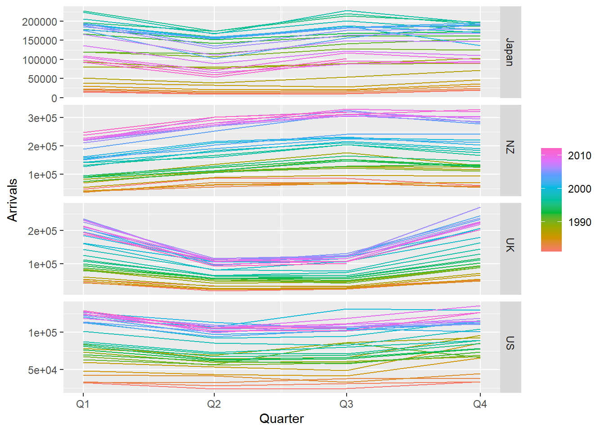
aus_arrivals |>gg_subseries(Arrivals)
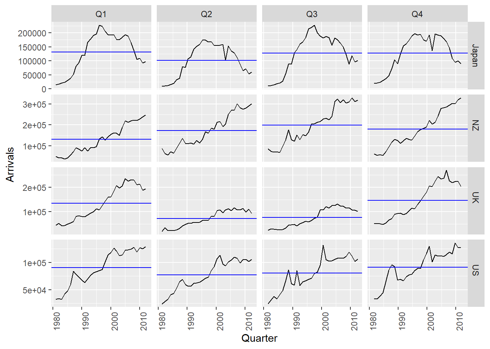
# Travel from Japan to Australia increased from 1980 to the mid-90s, but then declined. Travel from NZ, the UK, and the US has increased over time, kind of independent of season, expect for maybe Q2 and Q3 for the UK. This seasonality for the UK may be driven by more recent years. Unusual?
Monthly Australian retail data is provided in aus_retail. Select one of the time series as follows (but choose your own seed value):
# I see an obviously increasing trend and maybe cyclicity, but there is not any obvious seasonality. myseries |>gg_season(Turnover)
# Again not seeing a seasonality, but there is increased variability in the later years.myseries |>gg_subseries(Turnover)
# Only seasonality is just a small uptick in December maybe related to more shopping during the holidays. There turnover for these items reached their peak in early 2000's, but then decreased.myseries |>gg_lag(Turnover)
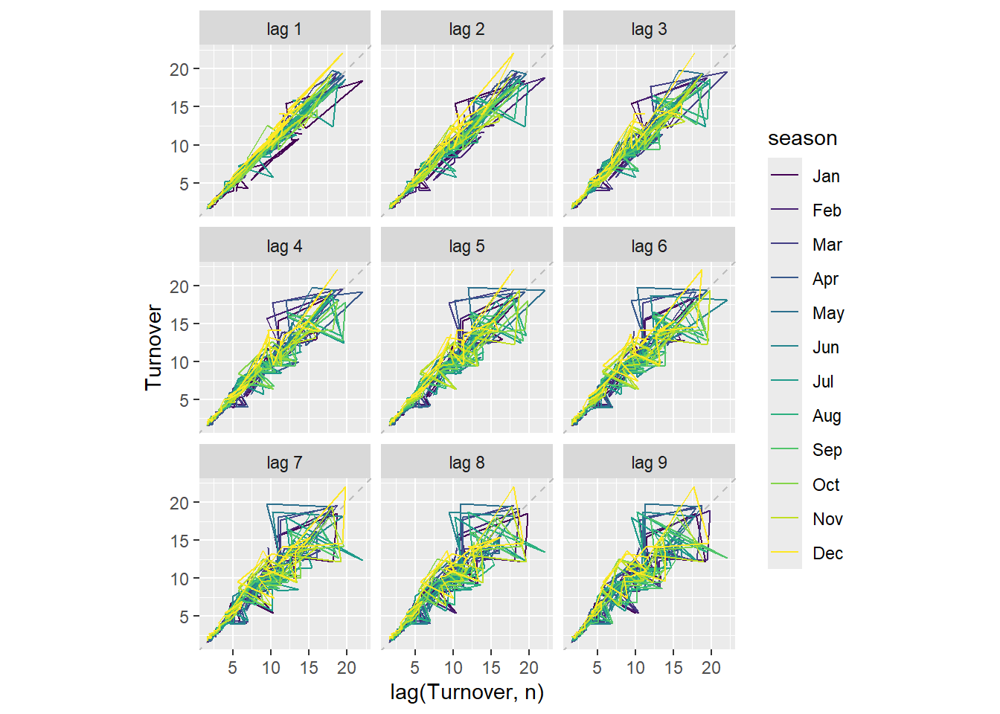
myseries |>ACF(Turnover) |>autoplot()
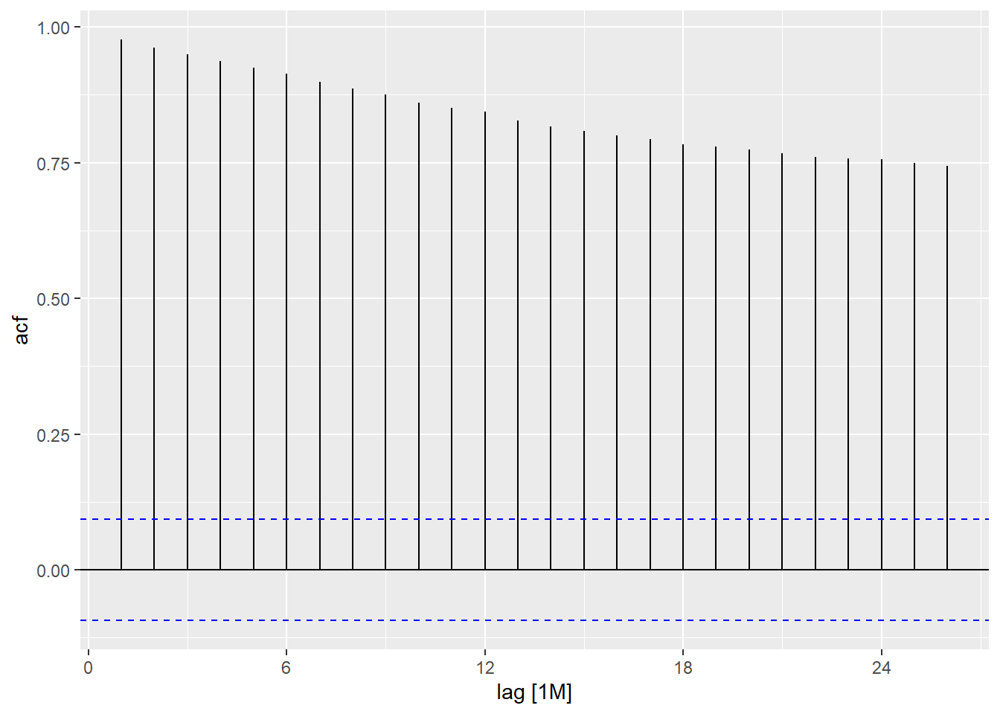
# Just annual cycles?
Using graphing functions
# Exploring US Employment Dataus_employment
# A tsibble: 143,412 x 4 [1M]
# Key: Series_ID [148]
Month Series_ID Title Employed
<mth> <chr> <chr> <dbl>
1 1939 Jan CEU0500000001 Total Private 25338
2 1939 Feb CEU0500000001 Total Private 25447
3 1939 Mar CEU0500000001 Total Private 25833
4 1939 Apr CEU0500000001 Total Private 25801
5 1939 May CEU0500000001 Total Private 26113
6 1939 Jun CEU0500000001 Total Private 26485
7 1939 Jul CEU0500000001 Total Private 26481
8 1939 Aug CEU0500000001 Total Private 26848
9 1939 Sep CEU0500000001 Total Private 27468
10 1939 Oct CEU0500000001 Total Private 27830
# ℹ 143,402 more rows
pelt |>ggplot() +geom_line(aes(x = Year, y = Hare), colour ="grey")+geom_line(aes(x = Year, y = Lynx), colour ="black")
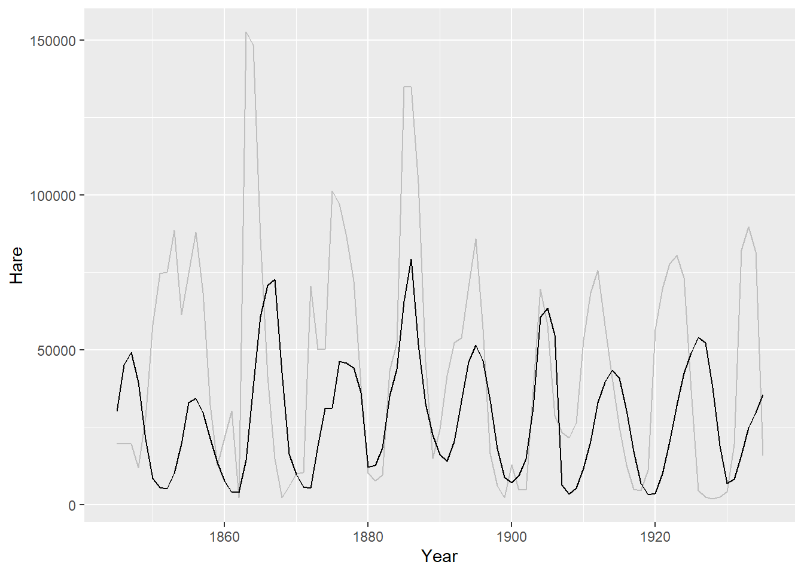
pelt |>autoplot(Hare)
# Annual data, so these can't be run# pelt |> # gg_season(Hare)# # pelt |> # gg_subseries(Hare)pelt |>gg_lag(Hare, geom ="point")
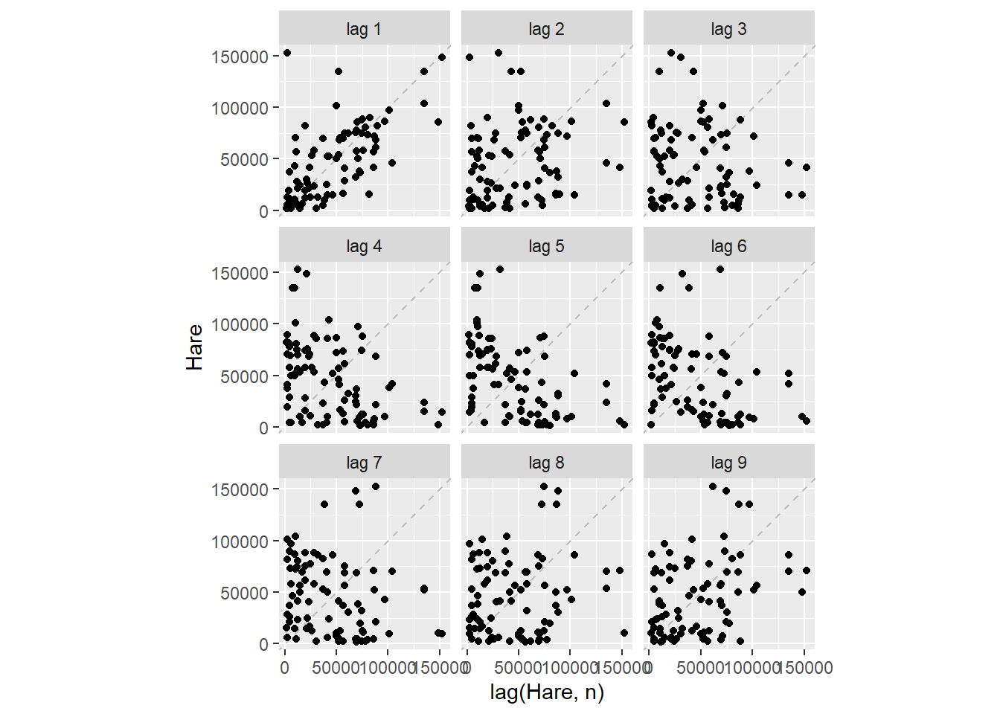
pelt |>ACF(Hare) |>autoplot()
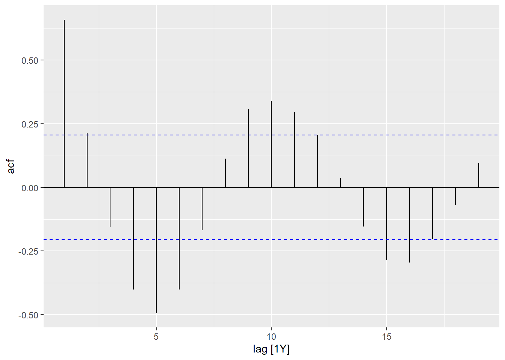
# 10 year cyclical behavior. Negative signigicant negative relationship between year 4-6.pelt |>ACF(Lynx) |>autoplot()
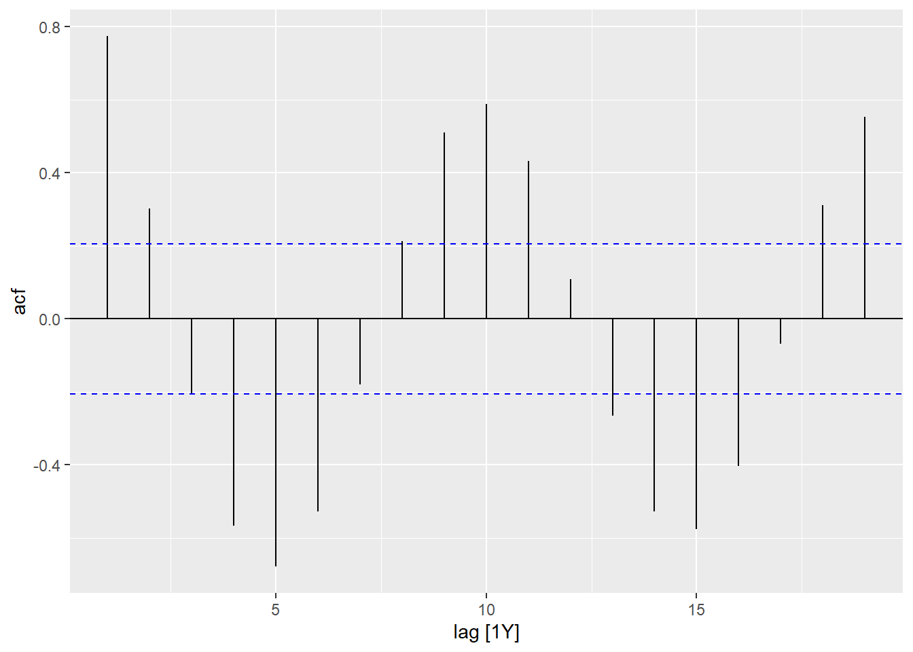
# Follows similar pattern to hares, by the acf values are much higher
The following time plots and ACF plots correspond to four different time series. Your task is to match each time plot in the first row with one of the ACF plots in the second row.
3 - D, 1 - B, 2 - A, 4 - C
The aus_livestock data contains the monthly total number of pigs slaughtered in Victoria, Australia, from Jul 1972 to Dec 2018. Use filter() to extract pig slaughters in Victoria between 1990 and 1995. Use autoplot() and ACF() for this data. How do they differ from white noise? If a longer period of data is used, what difference does it make to the ACF?
aus_livestock
# A tsibble: 29,364 x 4 [1M]
# Key: Animal, State [54]
Month Animal State Count
<mth> <fct> <fct> <dbl>
1 1976 Jul Bulls, bullocks and steers Australian Capital Territory 2300
2 1976 Aug Bulls, bullocks and steers Australian Capital Territory 2100
3 1976 Sep Bulls, bullocks and steers Australian Capital Territory 2100
4 1976 Oct Bulls, bullocks and steers Australian Capital Territory 1900
5 1976 Nov Bulls, bullocks and steers Australian Capital Territory 2100
6 1976 Dec Bulls, bullocks and steers Australian Capital Territory 1800
7 1977 Jan Bulls, bullocks and steers Australian Capital Territory 1800
8 1977 Feb Bulls, bullocks and steers Australian Capital Territory 1900
9 1977 Mar Bulls, bullocks and steers Australian Capital Territory 2700
10 1977 Apr Bulls, bullocks and steers Australian Capital Territory 2300
# ℹ 29,354 more rows
Plot variable not specified, automatically selected `.vars = Count`
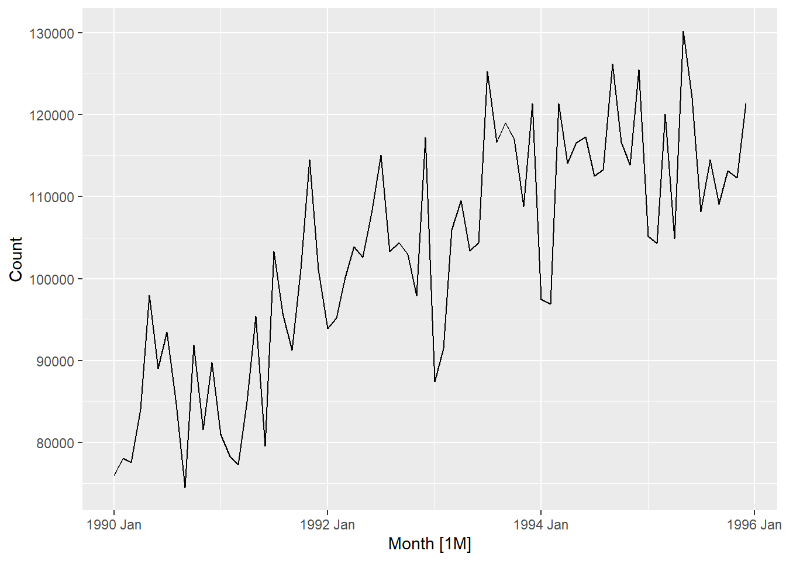
# Upwards trendvictoria_pigs |>gg_season()
Plot variable not specified, automatically selected `y = Count`
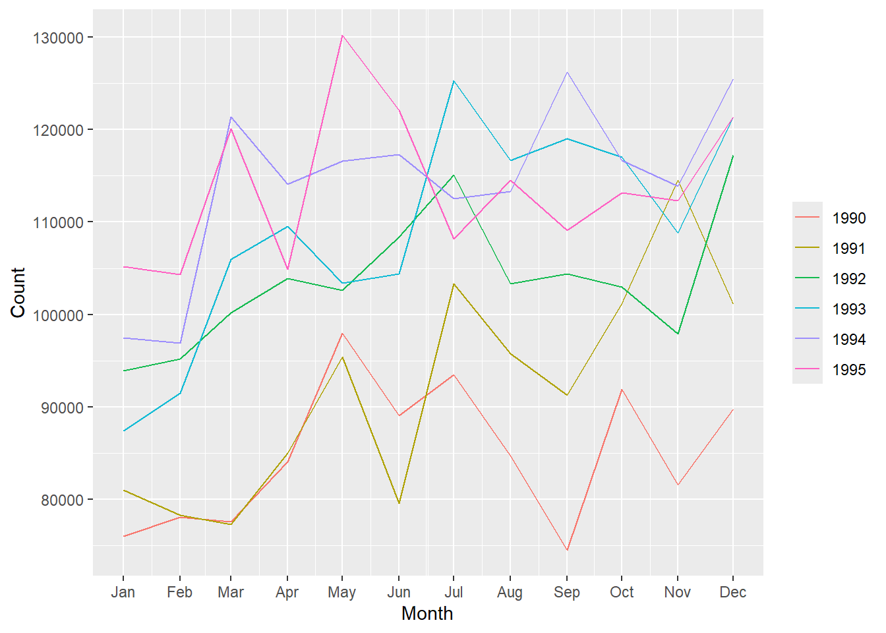
victoria_pigs |>gg_subseries()
Plot variable not specified, automatically selected `y = Count`
victoria_pigs |>ACF(Count) |>autoplot()
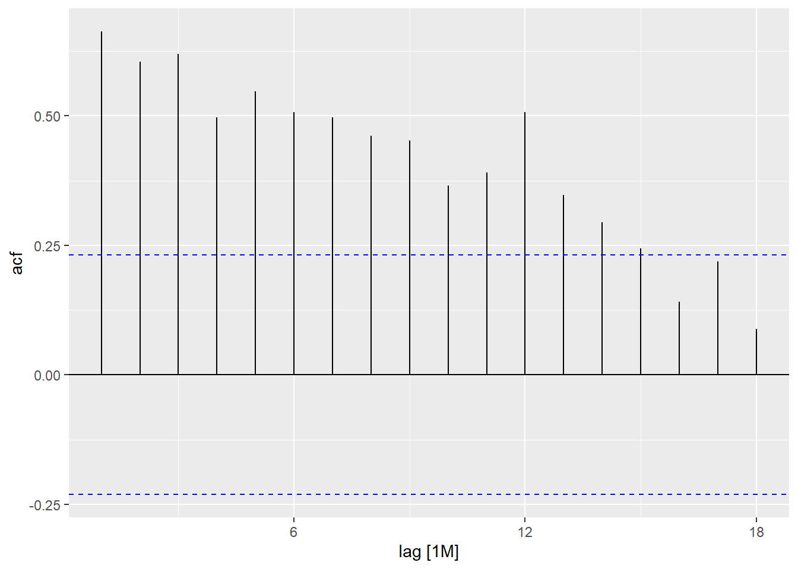
# This series is different from white noise in that may of the spike fall outside of the confidence band.
dgoog <- gafa_stock |>filter(Symbol =="GOOG", year(Date) >=2018) |>mutate(trading_day =row_number()) |>update_tsibble(index = trading_day, regular =TRUE) |>mutate(diff =difference(Close))# Why was it necessary to re-index the tsibble?# Data is not collected on the weekends, which make the time series non-continuous so we re-index using trading days instead.# Plot these differences and their ACF.dgoog |>autoplot(diff)
Warning: Removed 1 row containing missing values or values outside the scale range
(`geom_line()`).
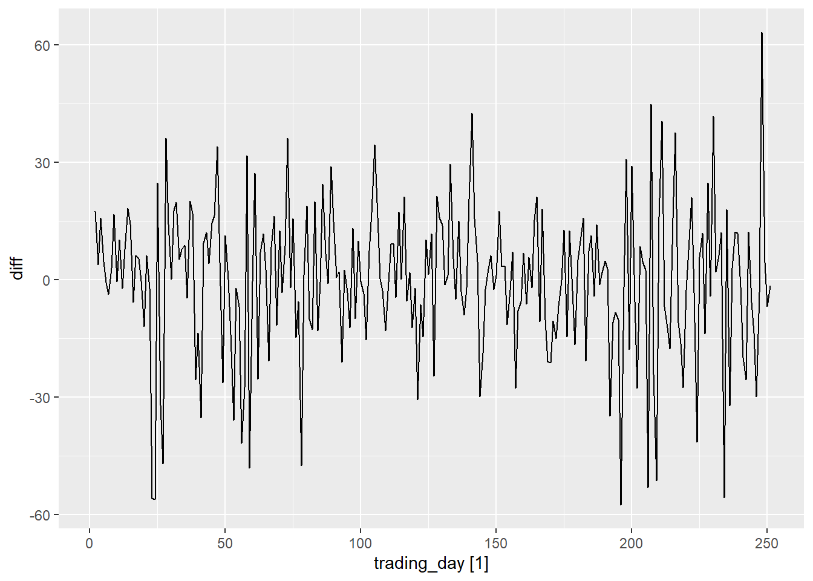
dgoog |>ACF(diff) |>autoplot()
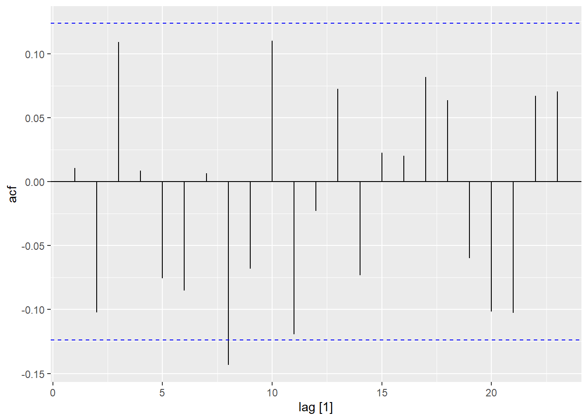
# Do the changes in the stock prices look like white noise?# Gerernally changes in stock prices look like white noise since they alll fall in under the confidence band
3. Chapter 3 -Time series decomposition (Notes)
4. Chapter 3 - Exercises
Consider the GDP information in global_economy. Plot the GDP per capita for each country over time. Which country has the highest GDP per capita? How has this changed over time?
global_economy
# A tsibble: 15,150 x 9 [1Y]
# Key: Country [263]
Country Code Year GDP Growth CPI Imports Exports Population
<fct> <fct> <dbl> <dbl> <dbl> <dbl> <dbl> <dbl> <dbl>
1 Afghanistan AFG 1960 537777811. NA NA 7.02 4.13 8996351
2 Afghanistan AFG 1961 548888896. NA NA 8.10 4.45 9166764
3 Afghanistan AFG 1962 546666678. NA NA 9.35 4.88 9345868
4 Afghanistan AFG 1963 751111191. NA NA 16.9 9.17 9533954
5 Afghanistan AFG 1964 800000044. NA NA 18.1 8.89 9731361
6 Afghanistan AFG 1965 1006666638. NA NA 21.4 11.3 9938414
7 Afghanistan AFG 1966 1399999967. NA NA 18.6 8.57 10152331
8 Afghanistan AFG 1967 1673333418. NA NA 14.2 6.77 10372630
9 Afghanistan AFG 1968 1373333367. NA NA 15.2 8.90 10604346
10 Afghanistan AFG 1969 1408888922. NA NA 15.0 10.1 10854428
# ℹ 15,140 more rows
Warning: Removed 3242 rows containing missing values or values outside the scale range
(`geom_line()`).
For each of the following series, make a graph of the data. If transforming seems appropriate, do so and describe the effect.
# United States GDP from global_economy.global_economy |>mutate(GDP_per_capita = GDP/Population) |>filter(Country =="United States") |>autoplot(GDP_per_capita)
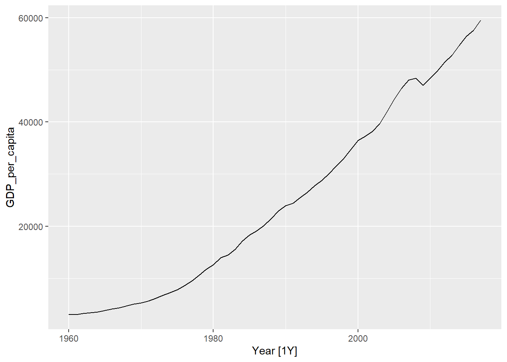
# Slaughter of Victorian “Bulls, bullocks and steers” in aus_livestockaus_livestock |>filter(Animal =="Bulls, bullocks and steers") |>filter(State =="Victoria") |>autoplot(Count)
# Accounting for days in the monthaus_livestock |>filter(Animal =="Bulls, bullocks and steers") |>filter(State =="Victoria")|>mutate(days =days_in_month(Month)) |>mutate(count_adj = Count/days) |>autoplot(count_adj)
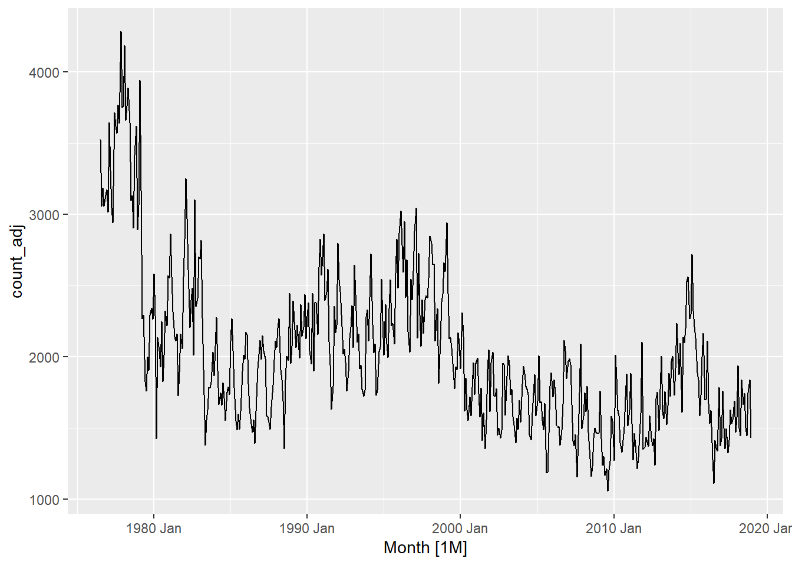
# Trend are still similar, they just be a little more accurate# Victorian Electricity Demand from vic_elecvic_elec |>autoplot(Demand)
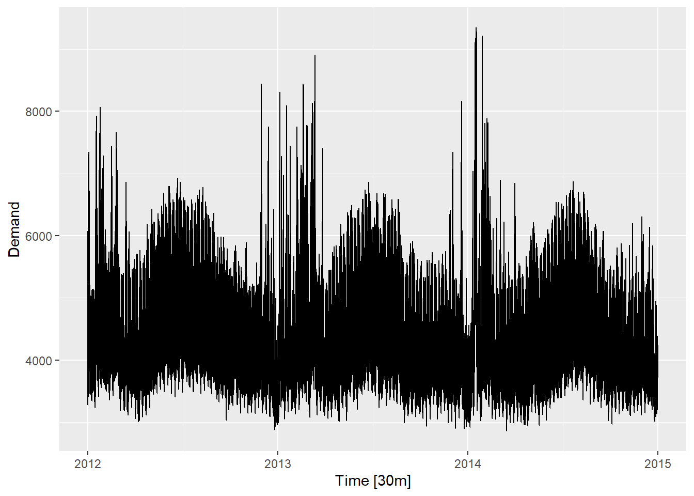
# Gas production from aus_productionaus_production |>autoplot(Gas)
aus_production |>autoplot(log(Gas))
Why is a Box-Cox transformation unhelpful for the canadian_gas data?
aus_production |>autoplot(Gas)
canadian_gas |>autoplot()
Plot variable not specified, automatically selected `.vars = Volume`
# Variability is somewhat stable? Differences among years tend to be due to an increasing trend ans seasonality.
What Box-Cox transformation would you select for your retail data (from Exercise 7 in Section 2.10)?
myseries |>autoplot(Turnover)
myseries |>autoplot(log(Turnover))
# Nopemyseries |>autoplot(sqrt(Turnover))
# Nope# A good value of lambda is one that makes the size of the seasonal variation similar across the whole time series lambda<-myseries |>features(Turnover, features = guerrero) |>pull(lambda_guerrero)myseries |>autoplot(box_cox(Turnover, lambda))+labs(y ="", title = latex2exp::TeX(paste0("Transformed Turnover with $\\lambda$ = ", round(lambda,2))))
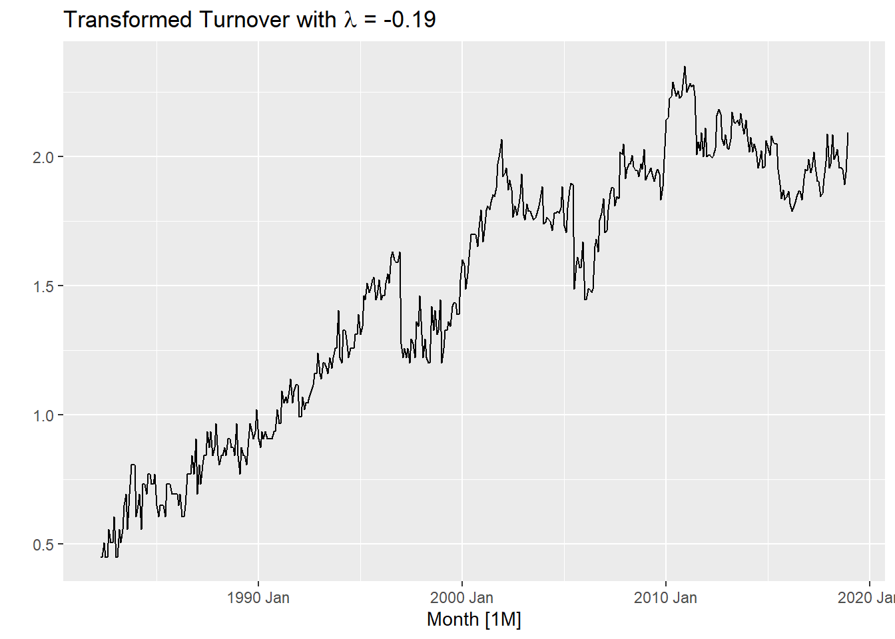
# Seems better# Negative lambda is suggested when variance decreases as the mean increases?# Let's explore othersmyseries |>mutate(turnover_lambda0 =box_cox(Turnover, 0), # log-transformturnover_lambda05 =box_cox(Turnover, 0.5), # sqrt-like transformturnover_lambda1 =box_cox(Turnover, 1), # no transformturnover_lambdaneg1 =box_cox(Turnover, -1)) |># inverse transformautoplot(turnover_lambdaneg1)
For the following series, find an appropriate Box-Cox transformation in order to stabilise the variance. Tobacco from aus_production, Economy class passengers between Melbourne and Sydney from ansett, and Pedestrian counts at Southern Cross Station from pedestrian.
aus_production |>autoplot(Tobacco)
Warning: Removed 24 rows containing missing values or values outside the scale range
(`geom_line()`).
# I dont really think a transformation is neededaus_production |>mutate(tobacco_lambda0 =box_cox(Tobacco, 0), # log-transformtobacco_lambda05 =box_cox(Tobacco, 0.5), # sqrt-like transformtobacco_lambda1 =box_cox(Tobacco, 1), # no transformtobacco_lambdaneg1 =box_cox(Tobacco, -1)) |># inverse transformautoplot(tobacco_lambdaneg1)
Warning: Removed 24 rows containing missing values or values outside the scale range
(`geom_line()`).
lambda<-aus_production |>features(Tobacco, features = guerrero) |>pull(lambda_guerrero)aus_production |>autoplot(box_cox(Tobacco, lambda))+labs(y ="", title = latex2exp::TeX(paste0("Transformed Tobacco with $\\lambda$ = ", round(lambda,2))))
Warning: Removed 24 rows containing missing values or values outside the scale range
(`geom_line()`).
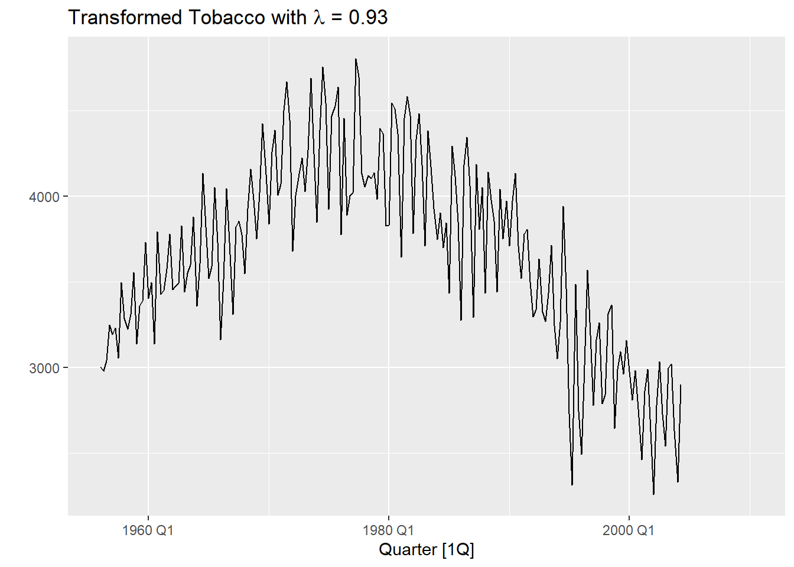
# Lambda is very close to 1, which may confirm that a transformation is not needed
ansett.df<-ansett |>filter(Airports =="MEL-SYD") |>filter(Class =="Economy") # There are some 0s in the data so, we cannontansett |>filter(Airports =="MEL-SYD") |>filter(Class =="Economy") |>autoplot(Passengers)
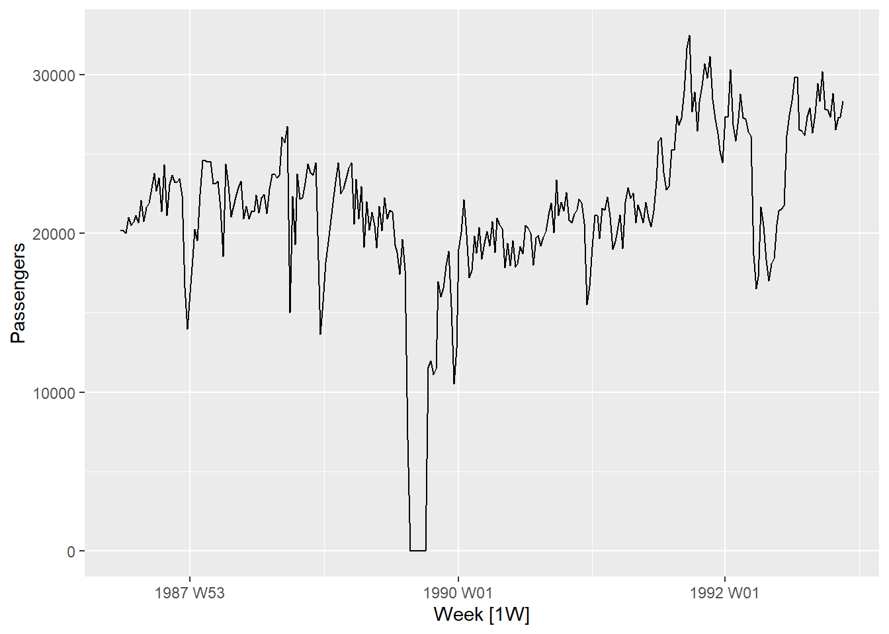
lambda<-ansett |>filter(Airports =="MEL-SYD") |>filter(Class =="Economy") |>features(Passengers, features = guerrero) |>pull(lambda_guerrero)ansett |>filter(Airports =="MEL-SYD") |>filter(Class =="Economy") |>autoplot(box_cox(Passengers, lambda))+labs(y ="", title = latex2exp::TeX(paste0("Transformed Passengers with $\\lambda$ = ", round(lambda,2))))
Warning: Removed 4 rows containing missing values or values outside the scale range
(`geom_line()`).
Warning: Removed 6 rows containing missing values or values outside the scale range
(`geom_line()`).
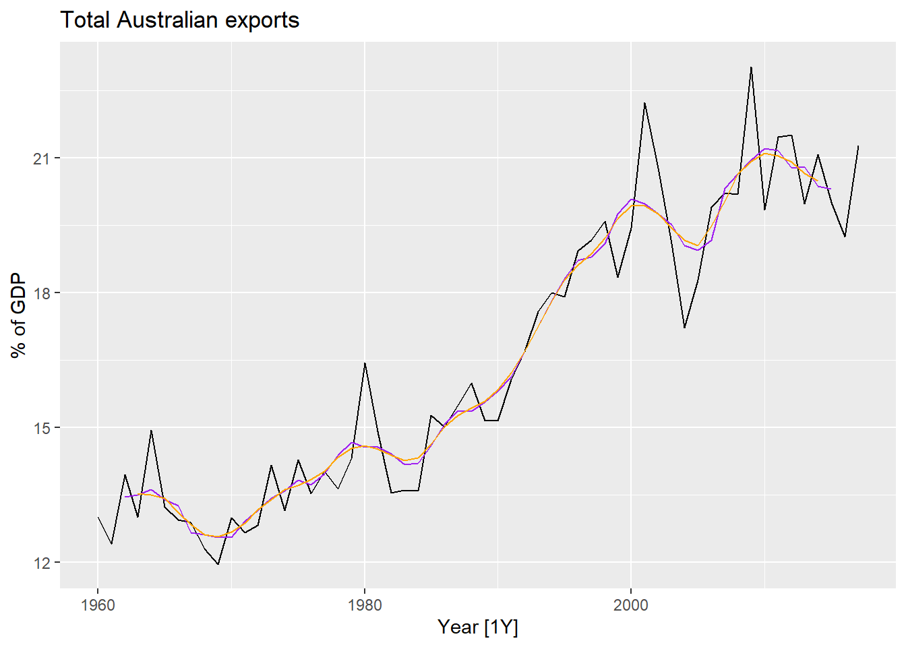
Consider the last five years of the Gas data from aus_production.
gas <-tail(aus_production, 5*4) |>select(Gas)# Plot the time series. Can you identify seasonal fluctuations and/or a trend-cycle?gas |>autoplot(Gas)
gas |>gg_season(Gas)
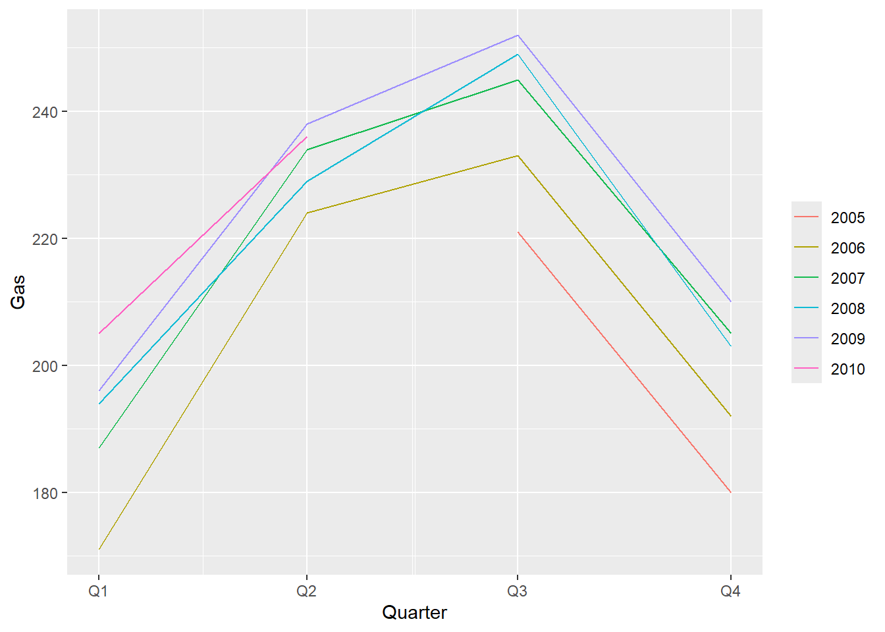
gas |>gg_subseries(Gas)
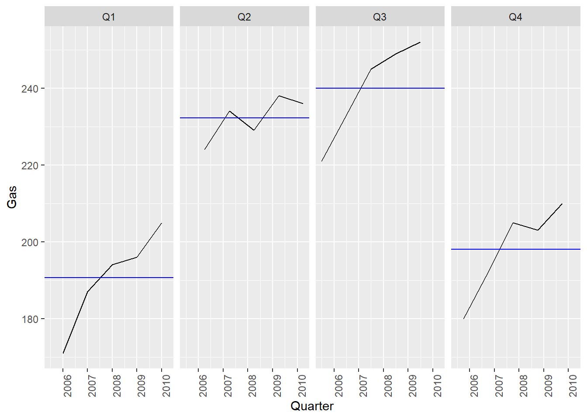
# It looks like there is an upward trend and some seasonality, gas dips during Q1 and Q4 and is highest at during Q3# Use classical_decomposition with type=multiplicative to calculate the trend-cycle and seasonal indices.# Do the results support the graphical interpretation from part a?gas |>model(classical_decomposition(Gas, type ="multiplicative")) |>components() |>autoplot()
Warning: Removed 2 rows containing missing values or values outside the scale range
(`geom_line()`).
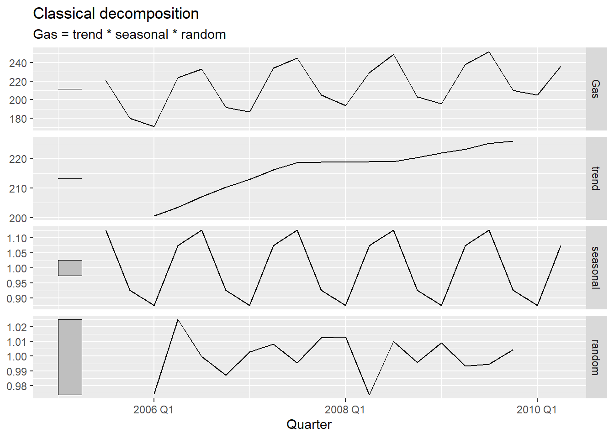
# Yes, results support my graphical interpretation!# Compute and plot the seasonally adjusted data.gas |>model(STL(Gas ~trend (window =21)+season(window ="periodic"))) |>components() |>autoplot()
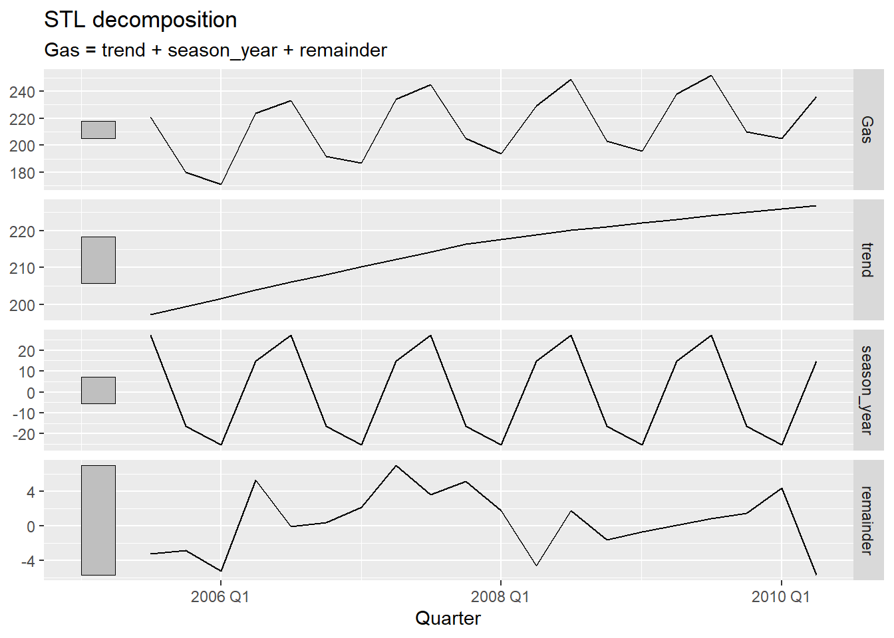
# Change one observation to be an outlier (e.g., add 300 to one observation), and recompute the seasonally adjusted data. What is the effect of the outlier?gas[15,1] =500gas |>model(STL(Gas ~trend (window =21)+season(window ="periodic"))) |>components() |>autoplot()
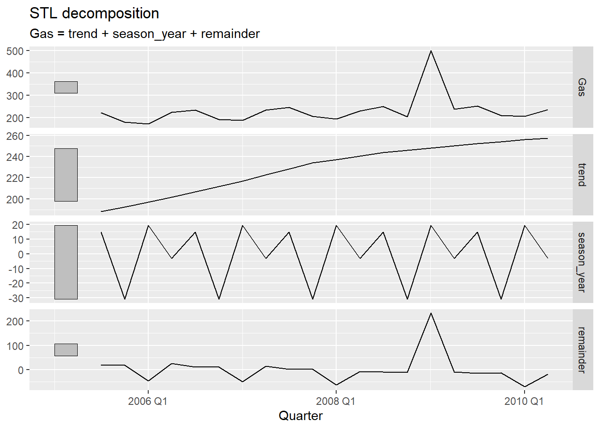
# The outlier changes seasonal cycle, using the robust function we can get it back.gas |>model(STL(Gas ~trend (window =21)+season(window ="periodic"),robust =TRUE)) |>components() |>autoplot()
# Having it at the end makes the seasonality look a little more normal, but then messes with the trend
Recall your retail time series data (from Exercise 7 in Section 2.10). Decompose the series using X-11. Does it reveal any outliers, or unusual features that you had not noticed previously?
library("seasonal")
Attaching package: 'seasonal'
The following object is masked from 'package:tibble':
view
x11_dcmp_myseries <- myseries |>model(x11 =X_13ARIMA_SEATS(Turnover ~x11())) |>components()autoplot(x11_dcmp_myseries) +labs(title ="Decomposition of Turnover using X-11.")
# There are some outliers before Jan 2000 that perhaps I would not have noticed with out this decomposition
Figures 3.19 and 3.20 show the result of decomposing the number of persons in the civilian labour force in Australia each month from February 1978 to August 1995.
There is an obvious increasing trend. Seasonality exists but at a very small scale when compared to other components of the time series. Seasonal trends are inconsistent. There are a few outliers following Jan 1990, due to the recession.
This exercise uses the canadian_gas data (monthly Canadian gas production in billions of cubic metres, January 1960 – February 2005).
canadian_gas
# A tsibble: 542 x 2 [1M]
Month Volume
<mth> <dbl>
1 1960 Jan 1.43
2 1960 Feb 1.31
3 1960 Mar 1.40
4 1960 Apr 1.17
5 1960 May 1.12
6 1960 Jun 1.01
7 1960 Jul 0.966
8 1960 Aug 0.977
9 1960 Sep 1.03
10 1960 Oct 1.25
# ℹ 532 more rows
# Plot the data using autoplot(), gg_subseries() and gg_season() to look at the effect of the changing seasonality over time.canadian_gas |>autoplot()
Plot variable not specified, automatically selected `.vars = Volume`
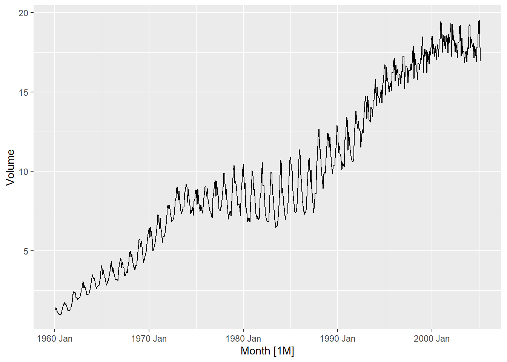
canadian_gas |>gg_season()
Plot variable not specified, automatically selected `y = Volume`
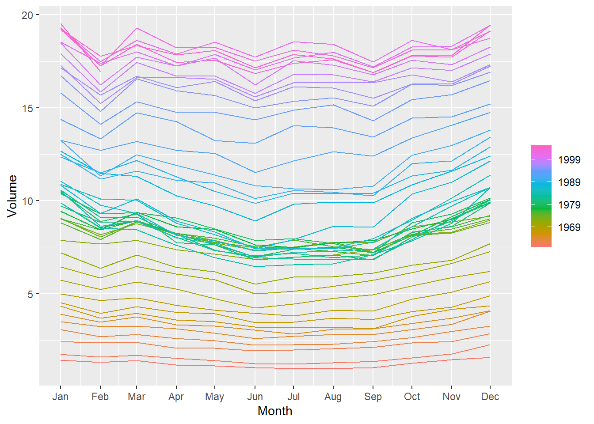
canadian_gas |>gg_subseries()
Plot variable not specified, automatically selected `y = Volume`
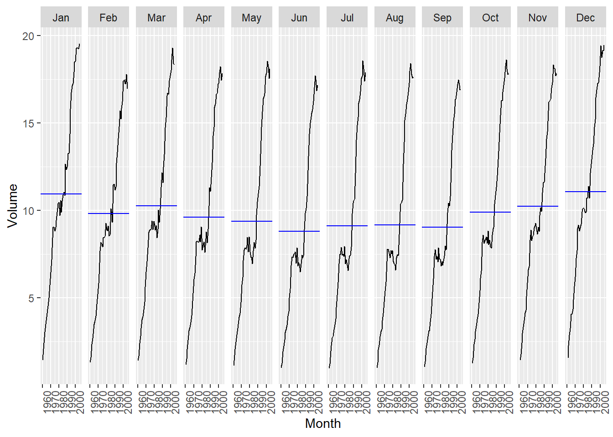
# Seasonality see to be most apparent in the 1970s, still some but more variation throughout the year# Do an STL decomposition of the data. You will need to choose a seasonal window to allow for the changing shape of the seasonal component.canadian_gas |>model(STL(Volume ~trend (window =21)+season(window =10))) |>components() |>autoplot()
# How does the seasonal shape change over time? [Hint: Try plotting the seasonal component using.# There is greater seasonality from 1970-200